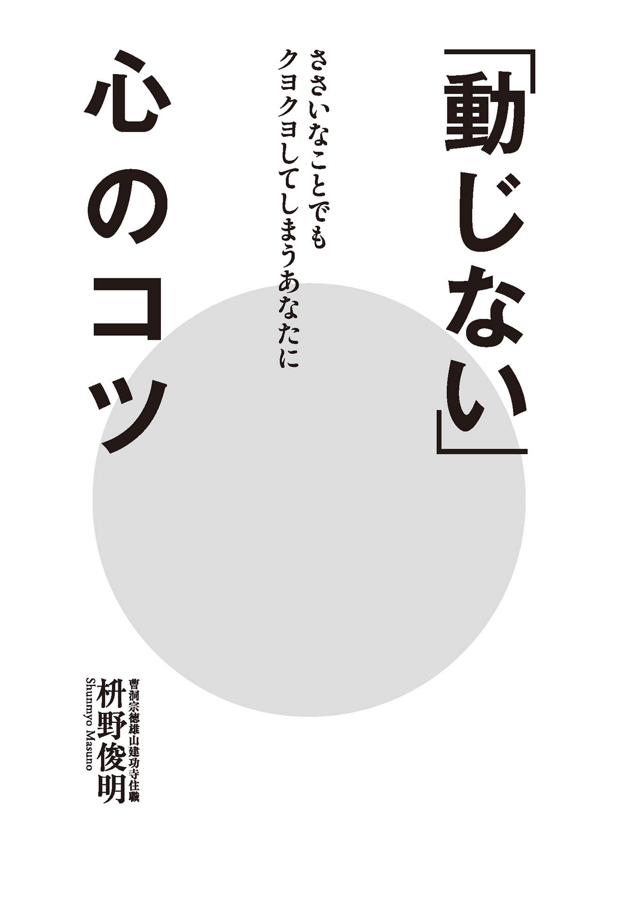
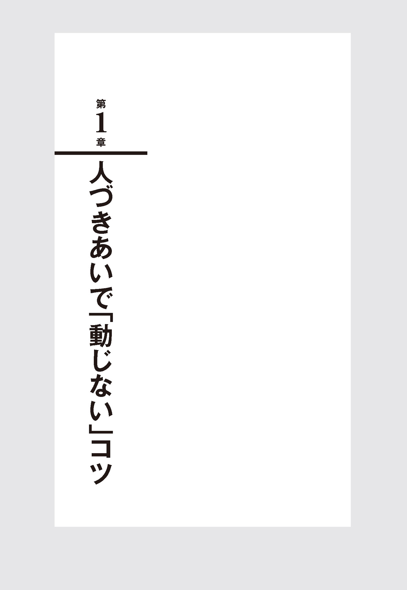
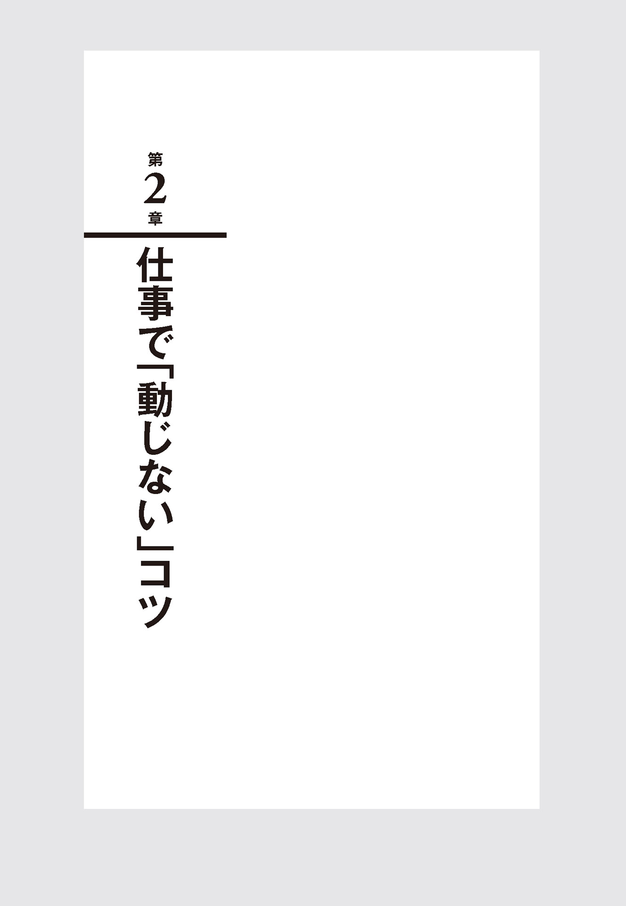
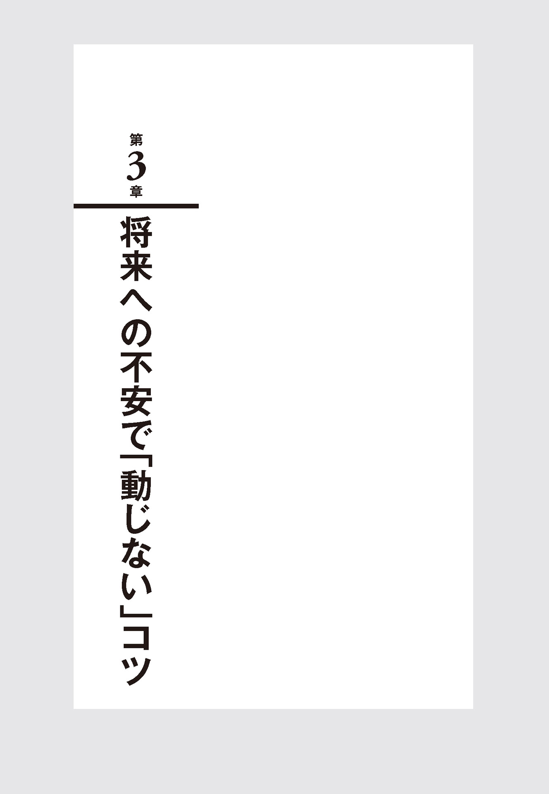
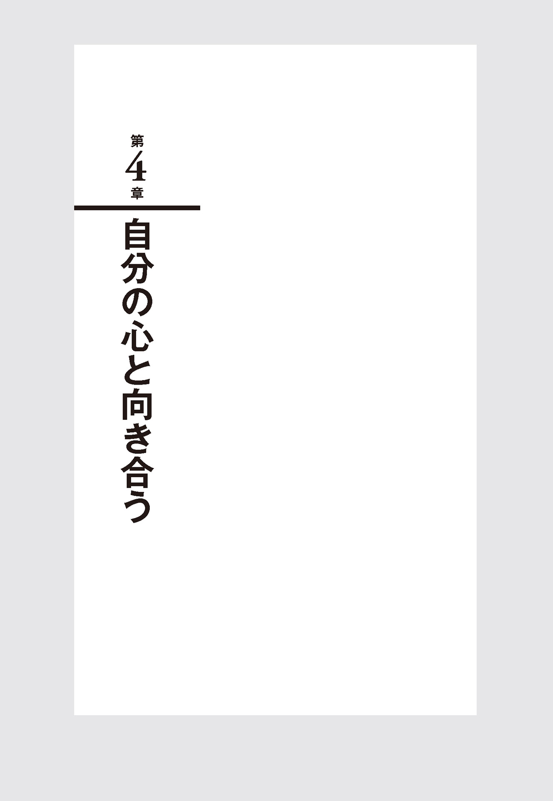

| 「動じない」心のコツ | |
| 枡野 俊明 | |
| 株式会社世界文化社 (2016) | |

「動じない」心のコツ 目次
何事にも動じることなく、いつも心穏やかに生きていく。自分自身を見失うことなく、まっすぐに自らの心と向き合って生きていく。私たち僧侶が修行を重ねる先には、おそらくはその境地が待っているのだと思います。つまり僧侶の修行とは、動じない心に向かっていると言い換えてもいいかもしれません。
しかし僧侶といえども人間です。まったく動じない心を持つことはなかなかできるものではありません。いかなる高僧でも、常に心が動じることなく生涯を終えた人などいないと思います。
日常の修行の際でも、時に心がかき乱されることもあります。自然現象ひとつとってみても、それによって心を乱されることがあります。たとえば朝起きてみれば、外は嵐のような風雨が襲っている。その光景を目にした瞬間には、当然心が動揺するものです。境内の木々は大丈夫だろうか。本堂が壊されることはないだろうか。さまざまな不安が押し寄せてきます。自然が織りなすことは仕方がないことだとはわかっているのですが、それでも心はかき乱されるものです。
あるいは師に何かを言われたときにも、心が動じることがあります。瞬間的に頭にくることもあるでしょうし、師の一言で落ち込んでしまうこともあるものです。表情は平静を装っていても、心の中には波風が立っている。そんな経験もあります。
何事に対してもまったく動じることのない人間。そんな人間はひとりもいません。ただ私たち僧侶は、その心の揺れ幅をできる限り少なくするべく修行を積んでいるのです。 一瞬揺れる心。「大変なことになってしまった。どうしたらいいのか」。そんな状態に陥ったときに、その揺れた心のままに行動をしないことです。動じた心のままで行動すれば、けっしてよい結果には結びつきません。それはかえって状況を悪化させることにもなりかねません。ですから私たちは、まずは動じた心を腹に落とし込むようにしています。
「大変なことが起きてしまった。しかし、ちょっと待てよ。ここは一旦心を落ち着かせて考えてみよう」。そんなふうに自分自身に言い聞かせるようにしています。ほんの一瞬自分の心と向き合うことで、心の揺れ幅は少し小さくなるものです。僧侶の修行とは、すなわち動じる心を封じ込めることではなく、心の揺れ幅をできるだけ小さくしていくことにあるのです。
もう少し身近な話で言うと、有名な一休禅師のエピソードがあります。
あるとき一休さんと弟子が、お寺に戻るために街中を歩いていました。すると一軒のお店でウナギを焼いていました。何ともいい匂いが漂ってきます。その匂いに誘われるように一休さんは言いました。
「ああ、何ていい匂いなんだ。美味しそうなウナギだな」と。
弟子はその言葉にびっくりします。修行の身であるということは、いっさいの煩悩から離れることです。不 如 法 と呼ばれる肉や魚を食べたいなどという欲望を口に出すことは、いけないことだとされています。名だたる高僧である一休さんともあろう人が、ウナギを焼いている匂いに、「いい匂いだな」などと口に出したことに弟子は驚いたのです。
「お師匠。そんなことを言ってもよいのですか？」
弟子は思わず一休さんに言ったそうです。
そして二人はお寺に帰りつきました。履物を整えながら、弟子が思わず口にしました。
「それにしてもお師匠、先ほどのウナギの匂いは美味しそうでしたね」と。
答えて一休さんは言いました。
「お前はまだそんな心に囚われているのか。私はもう、すっかりウナギのことなど忘れてしまった。ウナギの匂いなどとうに街に捨ててきた」と。
この言葉に弟子は教えられたといいます。身のまわりの出来事に心が引っ張られることはあります。ウナギの匂いを嗅いで美味しそうだと心が揺れるのは当たり前のこと。しかし、その思いをいつまでも引っ張ってはいけないということです。いつまでもそこに心を留めていれば、心はずっと揺れ続けることになるのです。この一休さんの教えこそが、動じた心の揺れを小さくする方法なのです。
◎
「動揺する」という言葉があります。この言葉は日常の会話にもよく使われるものです。一方で「動じる」という言葉はあまり日常会話では出てきません。では「動揺する」と「動じる」はどう違うのか。 私なりに考えてみました。
「動揺する」というのは、おそらくは瞬間的な心の動きだと思います。これまで経験したことのないことに出会う。そんなときに人は動揺します。対応の仕方も知りませんから、いったいどうすればいいのかわからない。冷静な判断力を失って、ただあたふたとする、ということになります。まさに心が動揺するときでしょう。
あるいは誰かに心ない言葉を浴びせられる。酷いことを言われる。そんなときには瞬時に怒りの感情がこみ上げてきます。頭に血が上るという状態です。これもまた心が動揺している状態です。それらの動揺は、日々に私たちを襲ってくるものです。小さなものから大きなものまで、社会に生きていればそこには必ず動揺があるものでしょう。
しかし、その動揺をいつまでも引きずってはいけないのです。一瞬の動揺をやり過ごすことができずに、いつまでも心に留めてしまうこと。それこそが「心が動じる」ということなのだと思います。「動揺」は一時のものですが、「動じる」ことは長く心の中に巣くってしまうことになります。そして動じる状態が長く続けば、やがて心が疲れ果ててしまいます。
何かの苦しみや辛いことに出会ったとき、人は誰もが動揺するでしょう。「もう自分ではどうすることもできない」「もうこれで自分の人生も終わりだ」と思ってしまうこともあるかもしれません。しかし、人生はそんなに簡単には終わりません。苦しみの先には必ず喜びが待っています。苦しみや悲しみが一生続く人生など、あるはずはないのです。
ところがその「動揺」をいつまでも引きずってしまうと、常に心が苦しみのために動じている状況に陥ってしまいます。苦しみの先にある安寧を信じることもできず、悲しみの裏側にある優しさにも目が向かない。自分にはもう苦しみしか見えてこない。これが絶望感へとつながり、自らの命をも捨てる悲劇につながりかねません。
人間には喜怒哀楽という感情があります。この喜怒哀楽がある限り、動揺することから逃れることはできません。また喜怒哀楽を不要に抑え込む必要もないと思います。大切なことは、一時の喜怒哀楽に囚われないということ。一時の動揺を動じる心につなげないということだと私は思っています。
苦しみや悲しみばかりでなく、喜びや嬉しさといった感情さえも引きずってはいけないのだと思います。喜びはプラスの感情なのですから、ずっと味わっていればいいではないか。私たちはついそう考えてしまいますが、そのプラスの感情さえも流していくことです。
たとえば宝くじで高額当選したとしましょう。ある日突然に見たこともないようなお金が入ってくる。その喜びは大きな動揺を生み出すことになります。確かにプラスのことではありますが、その動揺がずっと続けば、やがてはマイナスに転じていきます。
宝くじが当たったという嬉しさ。その嬉しさのあまり、「このお金をどのように使おうか」「旅行に行こうか、それとも車を買おうか」「使い切れない分は投資に回そうか」「もしも邪 な連中が近寄ってきたらどうしようか」などなど、さまざまなことが頭の中を巡っていきます。それも一日や二日ではなく、半年も一年もそのお金のことで頭がいっぱいになってしまうことでしょう。それまでの落ち着いた日常がなくなり、毎日が興奮状態になっていく。これもまた心が動じているのです。
喜びや楽しさによって生じた心の動揺が長引くと、本来の自分自身を見失うことにつながっていきます。大きな喜びの中に身を置いているときには、人は冷静な判断をすることが難しくなります。楽しさに囚われていれば、相手の寂しさに気が付きません。相手に対する思いやりも忘れてしまうことになるでしょう。それが、人間というものなのです。
大切なことは、一時の感情に身を委ねないことです。日々に湧き出てくる喜怒哀楽の感情。それらを上手に受け流す術を身につけることです。
私たち禅僧は、修行中は日々の坐禅を欠かすことはありません。呼吸を整えて、静かに坐禅を組む。囚われのない境地になることを目指してはいますが、なかなかできるものではありません。坐禅を組みながらも、ついさまざまなことが頭に浮かんできます。今日の予定を考えることもあれば、昨日のちょっとした失敗を悔いることもあります。しかし私たちは、それらの思いに縛られないようにしています。自らの心の揺れを、やり過ごすようにしているのです。ひたすらに「動じない」心を求めながら。
◎
日々の生活とは、とても坦々としたものです。大した変化もなく、何の刺激もなく過ぎていく日々。その日常の中にこそ、幸せは宿っていると私は考えています。
仕事をしていく中では、さまざまな変化が訪れます。その変化の中には喜びも苦しみもあるでしょう。しかし、そうした仕事の変化でさえも、やがては日常の中に埋もれていくものです。それはけっして悪いことではありません。
たとえば新入社員のときには、毎日が変化の連続でしょう。何をやっても初めての経験なのですから、いちいちその変化に動揺することになるのです。あたふたしたりしながら仕事に取り組んでいくものです。ところが２年も経てば、すっかり心の動揺は少なくなってきます。経験を積むことによって、心が動揺することが少なくなっていきます。少々の失敗くらいで動揺しなくなります。
そんな状態になると、今度は日常がとてもつまらないものに見えてきます。来る日も来る日も同じ仕事をこなしている。昨年の今ごろと同じことをしている。動揺することもない代わりに、変化が心を揺さぶることもない。いわゆる「マンネリ」という状態です。しかし、マンネリを感じるということは、すなわち自分自身が成長しているということなのです。その成長を喜ぶ気持ちを持つことです。
さらに言えば、そのマンネリから脱出するためには、単に変化を求めるだけではいけないということです。自分自身の仕事を今一度振り返り、それを深めていく努力をすること。一見すれば同じ仕事に見えても、その実は少しずつ変わっているものです。たとえ大きな変化などなくとも、小さな変化は自身で生み出すことができます。心が動揺するほどの変化はなくとも、心が少しだけ振れるような変化は、日常の中にたくさんあります。
人間の心というものは、どこかで変化を求めているものです。坦々とした日々に飽きてしまう。そんな気持ちは誰にでもあるものです。
たとえば旅行に行くこともまた、心が変化と刺激を求めているからではないでしょうか。知らない土地に行って、知らなかったものを見る。その変化はとても心地よいものでしょう。特に海外などに出かけると、知らぬうちに心が動じているものです。
海外旅行などに出かけると、つい余計な買い物をしたりする。日ごろならば注文しないような高価な料理を食べたりする。これもまた心が動じている証拠なのです。
しかし海外旅行を何度も経験するうちに、無駄な買い物は少なくなっていきます。わざわざ高価な料理も食べなくなってくる。これもまた仕事と同じで、経験を重ねることによって心が動じなくなるからでしょう。言い換えれば、こうした海外旅行でさえも、回数を重ねれば日常に埋もれてしまうということなのです。
心が変化を求めている。そしてその変化に飛び込んでいく。しかし、その変化もやがては日々の中に埋もれていく。人生とはその繰り返しなのかもしれません。
つまり、さまざまな変化の中で最後に残るもの。それが坦々とした日々なのです。であるからこそ、その日々の中に幸せを見つけることです。
毎朝目が覚めて、朝ご飯をいただく。同じ時間に家を出て駅へと向かって歩く。会社に着けば昨日と同じような仕事が待っている。そして夜には我が家に帰ってくる。それは変化のない毎日かもしれません。しかし、そこにこそ本当の幸せが宿っているのです。もしも病に冒されれば、会社に行くこともできません。家族の誰かがトラブルを抱えていれば、心配で仕事も手に付かなくなります。ちょっとした変化によって、穏やかな日常はたちまち奪われてしまうのです。
坦々とした日常生活を送れることに感謝をすることです。無 暗 に変化や刺激ばかりを求めないで、日々の中に幸せを感じることです。それこそが動じない心を持って生きることだと私は思っています 。
私たちは日々変化していることを知ってください。一日が経つごとに、確実に死に近づいているのです。確実に一日分身体は変化している。この世に変わらないものなど何もありません。すべてのものは常に移ろいでいます。昨日という一日と今日という一日。同じように思えても、まったく同じ日などありえません。もともと私たちは変化の中に生きていることを知ってほしいのです。
動じることなく、心穏やかに生きるためにはどのように心がけていけばいいのでしょうか。本書では、さまざまな心の悩みを解きほぐしながら、そのヒントとなるものを書き記しました。常に劇的な変化に晒される現代社会に生きる中で、少しでも心が安らげるようになってほしい。坦々とした日常の中に、あなただけが知る幸せを感じてほしい。私の願いはただそれだけなのです。

メールのやり取りが
ストレスになっている
最近の人間関係は、メールなくしては成り立たないまでになりました。ビジネスにおいても、また友人とのつきあいにおいても、もうメールは欠かすことのできない存在になっています。そんな状況の中で、メールのやり取りが気持ちのうえでの負担となっている人もいるようです。便利なはずのメールがストレスになっている。何とも滑稽な現象だと私は思います。
さて、相手からのメールの返事が来ないというとき、どのような心持ちでいればいいのでしょうか。 まずは仕事上のメールのやり取りにおいては、このような状態には陥りません。あくまでもビジネスのやり取りですから、必要な返答は当然のことです。相手からの返答がないと仕事が滞ったりするときには、速やかに催促をするでしょう。それでも返答がないとすれば、その人間は仕事のうえでは評価されません。仕事上のメールのやり取りとは、あくまでもビジネスの世界でのもの。そこに不要な感情を入れることなく、仕事として割り切ってやり取りをするだけです。
メールのやり取りで厄介なのが、友人や恋人などと交わす私的なメール だと思います。とくに最近では、ＬＩＮＥなどを通して常に誰かとやり取りをしている人をよく見かけます。相手のメールに対して、こちらもすぐに反応を返す。すると数分もしないうちにまた相手からのメールが届けられる。それを読んでしまえば、何となく返事をしなければいけないような気持ちになってくる。そしてまた返事を送る。この繰り返しがいったいいつまで続くのでしょうか。
日常的に行われている友人たちとのやり取り。それをまとめて読んでみてください。きっとそこには、大した内容などないはずです。「今どこそこにいる」「今こんな食事をしている」などなど、どうでもいい日常の出来事ばかりが羅列されています。それらの内容は、はたして返事をしなければならないものでしょうか。
ちょっとした会話を楽しみたい。本当にそう思っているのであれば、少しの時間でも会うことです。 30 分でもよいのではないでしょうか。お互いに顔を見合わせながら言葉を交わすことです。顔を合わせて会話をすることで、何気ない内容にも色合いが生まれてくる。 言葉の強弱や顔色が見えることで、互いの気持ちが通じ合ったりもするものです。
いちいち会うのは面倒だが、ＬＩＮＥでならやり取りをしてもいい。そんな相手が本当の友人とは思えません。それは単なる知り合いです。知り合いの数ばかり増えても、人生はけっして豊かにはならないと私は思っています。ビジネスのうえで知り合いが増えることはプラスに働くこともありますが、プライベートで知り合いが１００人になったところでプラスになるとは思えません。反対に知り合いが増えることでＬＩＮＥばかりに気を取られたり、相手からの返事がないとイライラしたりすることは、マイナスにしかなりません。
もしも今、こうしたストレスを抱えている人がいるのであれば、ぜひとも携帯の電源をオフにする時間をつくることです。夜の９時には電源を切って、自分の心と向き合う時間をつくることです。 常に電源を入れていないと困る。瞬時に返事をしないと支障が出てくる。そんなことは日常生活の中にはありません。それはあなた自身が勝手に思い込んでいるだけです。
相手のメールにすぐに返事をしなくてはいけない。相手からの返事がすぐに欲しい。それはすなわち、メールに心が縛られているということです。それはまったく不要なことだと思います。メールを気にする前に、もっと大切なことがたくさんあるはずです。
ドタキャンをされた
約束事をしていたのにもかかわらず、土壇場になってその約束を反故にされる。休日に映画を観に行く約束をしていたのに、当日に行けなくなったと連絡が入る。そんな経験は誰にもあるのではないでしょうか。
せっかく楽しみにしていたものが台無しになってしまうのですから、心は穏やかではいられません。その理由が仕方のないこと、たとえば絶対に断れない仕事が入ったとか、あるいは急に身体の調子が悪くなったとか。そんな理由であれば自分の心を納得させることもできるでしょう。
ところがその理由が納得できないときには、腹立たしさがこみ上げてくるものです。「急に上司からゴルフに誘われた」「友達がどうしても相談したいことがあると言ってきた」。相手にとっては大切なことかもしれませんが、ドタキャンされたほうとしては、すんなりと納得できるものではないでしょう。
あるいはキャンセルの理由をはっきりと言われないこともあるでしょう。「ちょっと大事な用事ができた」と。「大事な用事って何？」と聞いても、具体的なことは言おうとはしない。こうなれば心が動揺するどころか、怒りが込み上げてくるものです。言いたくないこともあるでしょうが、やはり礼儀として理由は伝えるべきだと思います。人間関係を壊すもっとも大きな要因は、相手に対する不信感ですから。
ドタキャンをされたときに、どのように心の動揺を抑えればいいのか。 一日中腹を立てていたところで、自分自身が損をするだけです。心を鎮めるためには、まずは相手の身になって考えてみることです。 もしも自分が相手の立場になったら、自分ならばどうするのか。もしも自分が大切に思っている友人から、どうしても会って相談がしたいと頼まれればどうするか。約束の映画をキャンセルしてでも駆けつけるか。それともあくまでも映画の約束を守ろうとするのか。少し冷静になって考えてみることです。
相手の身になって考えてみて、もしも自分でも同じことをすると思えば、もう心の動揺は消えてなくなります。反対にどうしてもその理由に納得できないときには、怒りはなかなか収まりません。しかしそれは、あなた自身が納得できないだけのことだと気づくことです。その人にとって何が大切なのか。人生の中で大切にしているものは何か。それは人それぞれで異なる場合があるものです。
つまりドタキャンをされて心が動揺するのは、ドタキャンをされたという事実ではなく、その理由にある のだと思います。
冷静になって、相手が約束を反故にした理由を考えてみることです。それはすなわち、相手の心を理解しようとすることと同じではないでしょうか。もしも相手のことを大切に思っているのであれば、その理由をわかってあげる努力をしてみることです。それでもどうしても理解ができないというのであれば、それはその人との縁を遠ざけていけばいいだけのことです。
平気でドタキャンを繰り返す人がいます。こういう人には二つのタイプがあります。一つは自己中心的な考えをする人。自分の都合を最優先で考え、相手のことに思いが至らない人です。そしてもう一つのタイプは、優柔不断な人です。約束があるにもかかわらず、強く誘われたら断ることができない。悪いと思いつつも、ついそっちへ行ってしまう人です。
まったくどちらもどうしようもない人間だと思うでしょうが、実は誰にもそのような部分はあるものです。ドタキャンをされた経験が誰にもあるように、ドタキャンをした経験もあるのではないでしょうか。したほうはすっかり忘れていますが、されたほうはなかなか忘れないものです。要するに、いちいち小さなドタキャンなどに振り回されるのはつまらないということです。
グサリとくることを
言われた
他人からの何気ない言葉が、心にグサッと突き刺さることがあります。 相手にしてみれば大した意味もなく発した言葉でも、受け取る側の気持ち次第で、その一言が心を動揺させることもあります。人間関係の中では、こうしたことはままあるものです。
では、どうしてその言葉がグサリと心に突き刺さるのでしょうか。それはおそらく、自分自身が気にしていたり、あるいはコンプレックスに感じているからこそ突き刺さる のだと思います。
たとえば少し体形がぽっちゃりしている人がいるとします。もしもその人が、ぽっちゃりした自分の体形にコンプレックスを持っていたとしたら、「ぽっちゃりしていて可愛いね」と言われれば、その言葉が心に突き刺さってくるでしょう。相手にしてみれば、本心から可愛いと思って言った言葉であるにもかかわらず、受け取る本人はそれをマイナスに取ってしまいます。自分がコンプレックスに思っていることをはっきりと言われるのですから、気分を害するのも当然のことです。
ところがもしも、自分のぽっちゃりした体形が気に入っている人であれば、その言葉で動揺することはありません。たとえ言ったほうに多少の嫌味があったとしても、本人はそれを褒め言葉だと捉えることができます。
仕事をしていく中でも同じことが言えるでしょう。誰もが得手不得手を持っています。得意なこともあれば不得意なこともあります。そんなことはわかっていても、やはり不得意な部分を直接指摘されれば、グサリとくることもあるでしょう。
「君はこの仕事が不得意だな」と上司から指摘される。自分自身もそれを認めて、どこかでコンプレックスを抱いていたのであれば、上司の言葉が動揺を生み出すことになります。たとえ不得手な仕事があったとしても、それをカバーして余りあるほどの得意なものがあれば、その言葉は受け流すことができるものです。このように、他人からの言葉がグサリと心に突き刺さるか否かは、結局はあなた自身の問題 であることを知ってください。
では、どのように考えればグサリとくる言葉に対抗できるのでしょうか。 いちいち動揺することなく、それらの言葉と向き合うことができるのでしょうか。
もしもグサリとくることを言われたとしたら、いっそそれを表面に出してしまうことです。「あなたはぽっちゃりしているね」「君はこの仕事が苦手だな」と痛いところを突かれたときには、それを誤魔化したりせずに、面と向かってそのコンプレックスと対峙してみることです。
コンプレックスというものは、悶々と胸の中に仕舞っておいても解決はしません。そこから目を背けようとすればするほど、コンプレックスの芽は大きくなっていきます。 そうであるならばいっそ、それらを心の表面に出して、真正面から見据えることです。 つまり、それらを少しでも改善させるべく努力をしてみることです。
ぽっちゃりしていることにコンプレックスを抱いているのであれば、それを表に出して運動をしてみたり、食事制限をしてみたりする。仕事の中に苦手意識があるのであれば、自ら進んで苦手な仕事を受けてみる。もちろんそうして努力をしたからといって、すべてが解決できるものではないでしょう。どうしても解決できないこともあります。しかし、そのコンプレックスに向き合うという姿勢を持つことで、相手の言葉に動揺しなくなるものです。
ただし、努力では変えられないものもあります。身長が低いとか、運動が苦手だとか。生まれ持った資質は変えることはできません。もしもそれを言葉にする誰かがいたとしたら、そんな人間は無視すればいいのです。きっとその人間も、どうしようもないコンプレックスを持っているのですから。
どうしても苦手な人がいる
現代はストレス社会と言われていますが、そのストレスの60 ％以上は人間関係によるものだというデータがあります。つまりは人づきあいによってストレスが生まれているのです。
その中でも多いのが、いわゆる苦手な人と関わるということです。職場の中にどうしても苦手な同僚がいる。近所にも気の合わない人がいる。関係を切りたいと思っても、なかなかそうはいきません。朝に出勤しながらも、「ああ、また会社に行ってあの人の顔を見なければいけないのか」。そう考えるだけで憂鬱になることもあるでしょう。
しかし考えてみてください。自分のまわりにいる人すべてが、気の合う人ばかりではありません。 プライベートでつきあう友人でさえ、気の合う人間と苦手な人間がいるものです。あるいはとても親しくつきあっていた人間でも、何らかのきっかけで苦手になることもあるでしょう。それが人間関係というものであり、いちいちそんなことに動じているのは無駄なことだと思いませんか。
もしも会社の中に苦手な人がいるのであれば、それは仕事だけの関係と割り切ってしまうことです。 必要以上にわかり合いたいとか、自分のことを理解してほしいなどという気持ちを持たないことです。仕事の場においては、必要以上に踏み込んだ関係など要らないと割り切ることです。
実際に仕事の中における意見の食い違いで苦手意識が生まれることはありません。お互いに仕事だと割り切って考えていれば、意見の食い違いは歩み寄ることができます。共にひとつの結果に向かって進んでいるのですから、同じ目標を持っていさえすれば、そこに人間関係のストレスが生じることはありません。
ところが、その仕事上の意見の食い違いに、互いの感情を持ち込むことで話がややこしくなってくるのです。仕事の意見はあくまでも仕事上のことです。その中に人格を持ち込もうとするから、合う・合わないという気持ちが生まれてくる。仕事というのは合うとか苦手だとか、そんな気持ちが入り込む場ではありません。いい意味で割り切って考えることで、苦手な人は少なくなっていくものです。
それでも、どうしても苦手な人がいる。顔を見るだけで気分が落ち込んでしまう。いくら仕事でも、割り切って考えることができない。もしもそんな人間がいるとしたら、静かにその人が去っていくのを待つことです。 組織には必ず異動があります。３年もすれば、その人はどこか別の部署に移っていきます。あるいはあなたが異動することもあるでしょう。要するに、その苦手な人と一生関わることなどないということです。
かといって、何も無視をするということではありません。朝出勤すれば「おはようございます」と笑顔で挨拶をする。同じ仕事を任されれば、その仕事に集中する。それ以外の余計な神経を使わない。そして会社を一歩出れば、心の中からその人を追い出してしまえばいいのです。
付け加えて言うなら、あなたが苦手だと思っている人への苦手意識は、もしかしたらあなた自身が生み出している場合もあるのです。苦手だと決めつけてしまうと、ついその人の欠点や嫌な面ばかりに目が行くものです。同じことをされても、好きな人からされれば何とも思わず、苦手な人からされるとストレスになる。そんなことは往々にしてあるものです。
苦手な人との関係を少しでも改善したいと思っているのであれば、その人のよいところを見つけてみることです。 第一、人間が持っているよいところ・悪いところというものは、明確に基準があるものではありません。それらは受け取る側の人間の心が決めている場合がほとんどです。苦手意識を自分の中で育ててはいけないのです。
失恋したときの
心の持ちよう
失恋したときに受ける心の痛み。その痛みは人間が恋を覚えたときから芽生える感情で、数多くの文学作品の中にも描かれてきたものです。
お互いに恋する時間を共にしてきたのにもかかわらず、どちらか一方が別れを告げる。別れを告げるほうも心が傷つき、告げられたほうも心に痛手を受けることになります。失恋というのはけっして一方だけの心が傷つくのではなく、互いにその痛みを分かち合うことなのです。
時に相手の気持ちなど振り返ることなく、自分勝手に別れを告げる人間もいるでしょう。人は誰もが自己中心的な考え方を持っています。まして感情ばかりが表面に出てくる恋愛に関しては、つい我 儘 な自分が顔を出すものです。しかし、たとえ感情に支配されていたとしても、やはり相手を思いやる気持ちを忘れないようにすることが大事なのではないでしょうか。その思いやりが、次の恋愛につながっていくのだと思います。
さて、突然に失恋が訪れたとき、なかなか心の整理がつかないこともあるでしょう。すぐに気持ちを切り替えることは難しいことです。もしかしたらよりを戻せるかもしれない。別れ話などウソだったかもしれない。ついそのように考えることもあるでしょう。
ドラマの中では、そのような場面が登場することもあります。しかし実際には、離れた心が戻ってくることはまずありません。 もしもよりが戻ったとしたら、それは心が離れていなかったということ。人間にとって、離れた心を元に戻すのは難しいことを知っておいてください。
それゆえに、離れていった恋人を追いかけることは、自分自身の人生を立ち止まらせることになります。失恋した相手に執着し、自分にはその人しかいないと思い込んでしまう。別れてもなお、その人ばかりを心が追いかけている。心が追いかけるだけならまだしも、現実に追いかけてしまえば、それこそストーカーになってしまいます。
今やストーカーの問題が頻繁に報道されていますが、その原点にあるのは執着心 です。誰かに執着する心。これが増幅すれば、相手に迷惑がかかるだけでなく、自分の心をも蝕んでいくことになります。 それは何も恋人に対してだけではありません。友人などに対しても同じことが言えるでしょう。自分の親友はこの人しかいないという思い込み。そんな思い込みが人間関係を悪くすることはままあるものです。
自分にはあの人しかいない。親友はこの人だけだ。まずはそんな思い込みを捨ててみることです。しっかりと自分の人生を歩んでいれば、必ずまた別の異性に出会えます。新しい恋は必ず始まります。 友人にしても、これから先には数 多 の人たちと出会います。その中には新たな心の友がいるものです。恋愛にしても友人関係にしても、たった一人の人に執着することは、すなわち他の出会いを見過ごすことにもなりかねません。
仏教では、縁は誰のもとにも平等に流れていると考えられています。常に新しい縁が自分のまわりに流れている。 恋愛の縁も友人の縁も、けっしてひとつだけではありません。その縁に目を向けることが大切なのです。
よく「私はよい縁に恵まれない」と嘆く人がいます。縁がないから恋人ができない、縁がないから結婚ができないのだと。しかしそれは違います。あなたのまわりにはたくさんの縁が溢れている。まずはその縁に目を向けて、結ぼうとすることです。もう過ぎ去った恋は横に置き、新しい縁に目を向けてください。
失恋は心の痛手になるでしょう。しかし、その痛手にばかり囚われていると、流れている縁が見えなくなってしまいます。もっと言えば、失った恋もまた、あなたにとっての縁であるのです。 出会いの縁もあれば別れの縁もある。それが人間の人生というものだと私は思っています。
気が乗らない集まりに
誘われたら
人間関係におけるつきあい。さまざまなつきあいがある中で、いわゆる会合や飲み会などというものがあるでしょう。たとえば会社にいれば、忘年会などをはじめとして、社内や部署内での集まりはどこにでもあるものです。そのような会合は、半ば「公式行事」として考えることです。
会社の飲み会などにはできるだけ参加したくない。会社を出てまで社内の人間と顔を突き合わせたくない。中にはそういう人もいると思います。しかし会社という組織にいる限り、あまり勝手な行動をとることはできません。そのような「公式行事」には、仕事だと割り切って参加をすることが必要だと思います。
やはり日本社会というのはチームワークを大切にしていますので、その輪を乱すことをしてはいけないと思います。多少気が乗らなくても、坦々とその時間をやり過ごすことです。
さて、悩ましいのは、プライベートにおける集まりです。会社の同僚から誘われたり、あるいは友人から誘われたり。これは公式行事ではありませんから、自分の気持ち次第で断ることもできます。簡単に言うなら、行きたくなければ行かなければいいのです。その一言に尽きるのではないでしょうか。
それでも悩むというのはどうしてでしょうか。それはきっと、参加をしなければ仲間外れにされてしまうという心配があるからだと思います。一度断ったら、もう二度と誘ってもらえないかもしれない。参加しなければ自分の悪口を言われるかもしれない。もしかしたら、そんな恐怖心がどこかにあるのかもしれません。
しかしよく考えてみてください。それは何とも幼い考え方だとは思いませんか。一緒に行動しないと仲間外れにする。その場にいない人の悪口を言う。それは小学生レベルの人間関係です。まあ中学生や高校生ならばわからないでもありませんが、大の大人が心配するようなことではありません。
もしも飲み会などに誘われて、断ったせいで仲間外れにされたとしたら、それだけの人間関係だと思うことです。 そんな人間関係の中にいる必要はないと思います。さっさと縁を切ってしまうことです。
人間にはいろんなタイプの人がいます。たくさんで集まるのが好きな人もいれば、少人数で静かに飲むのが好きな人もいる。あるいは一人きりの時間を過ごすことが好きな人もいます。大人というのは、お互いのことを認め合い、それぞれの考え方を尊重できる人のことです。
自分がワイワイと飲むことが好きだからといって、みんなをそれに巻き込む。巻き込まれない人に対してはよい感情を抱かない。そういう人はきっと、心が成長しきれていないのでしょう。徒 に周りを巻き込まない関係こそが、大人としてのマナーだと私は考えています。
そしてもう一つ。孤独というものを恐れないことです。 いつも誰かと一緒でなければいけない。独りでいると、置いてけぼりになったような気がする。そんな感情があるから、つい気が乗らない集まりにも無理をして参加しようとする。要するに孤独になることが怖いだけではないでしょうか。
人間はもともと孤独な存在です。生まれるときも死ぬときも独りです。会社の中にいて、たくさんの同僚たちに囲まれていたとしても、それは単なる現象に過ぎません。いかに多くの人の中に身を置いていても、最終的には自分一人であることを心に留めておくことです。
そして孤独であることは、けっしてマイナスのことではありません。孤独であることを意識するからこそ、相手との人間関係を大切にしようとするのです。孤独だからこそ互いの心を寄せ合おうとする。表面的な孤独を恐れないようにすることです。
見栄を張ってしまった
まわりの人からよく見られたい。本来の自分よりも少し高く見られたい。そんな欲望は誰にでもあるものです。
そこで、ついちょっとした見栄を張ってしまう。自分の力量以上のことができると言ったり、あるいは身の丈に合わないような洋服を買ってみたり。そんな経験もあるでしょう。もちろん人からよく見られたいと思う気持ちは悪いことではありません。その気持ちが自身を成長させることにつながることもあります。
しかし、単に外見を着飾るだけの見栄は、やがて自分自身を苦しめることにもなります。たとえばお給料が20 万円であるのに、見栄を張って10 万円もするバッグを買う。それが心から欲しいと思っていたものであればまだしも、見栄を張るために買ったとしたら、いずれはまた別のバッグが欲しくなります。なぜならば、表面的に飾る見栄は、いずれは色褪せてくるからです。
見栄と物欲はとてもよく似ています。 それは留まるところを知らず、永遠に続いていくからです。一度見栄を張ってしまったら、その見栄を維持するためにまた新たな見栄を張らなければなりません。物欲が留まるところを知らないように、見栄もまた張り続けなくてはならない。やがてそれが、自分の心に大きな負担となって還ってくるのです。
飾り立てられた見栄は、すぐさま相手に見透かされます。 自分ではバレていないつもりでも、相手はその見栄をとうに見破っている。そしてその見栄が相手に見破られたとき、それは恥へと変わっていくのです。厳しいようですがそれが現実だと思います。
では見栄を張らないで生きるためには どうすればいいのでしょう。それは「ありのままの自分」に目を向けること です。「ありのままの自分」とは何か。自分の我儘を通したり、自我を貫くことではありません。「ありのまま」とは、自分自身に無理をすることなく、自然な気持ちで生きることです。つまりは自分にとっていちばん心地よい生き方とは何かを知ること だと私は思っています。
ある20 代の女性がこんな話をしてくれました。彼女の職場はとても華やかで、同僚たちはこぞってブランドものの洋服を身に着けているそうです。彼女はあまり興味がないのですが、それでも見栄を張って、同じように無理をしながらブランド品を買っていました。本当の自分はこれではないと心では思いつつも、まわりの見栄に巻き込まれていったそうです。
ところが職場を見渡すと、一人の先輩社員が目に留まりました。その女性は仕事もできて、後輩からも一目置かれていました。しかし、その先輩はまったくファッションなどに関心がないようで、いつもジーンズに真っ白いワイシャツ姿で会社に来ます。清潔感には溢れているのですが、どれも高価な洋服には見えません。自分よりも給料が高いはずなのに、どうしてもっと高価な洋服を買わないのであろうか。あるとき彼女はその先輩に聞いてみたそうです。「どうしてもっとお洒落な洋服を買わないのですか？」と。
先輩はにっこりと笑って答えました。
「私は本を読むのが大好きなの。だから書店に行って、お気に入りの本を見つけたとき、値段を気にすることなく買うことができる。それだけで十分だし、それが私の幸せなの」
先輩のこの言葉で、彼女は見栄を張ることの無意味さに気がつきました。それ以来、彼女は無駄な見栄を張ることを止め、ありのままの自分に目を向けるようになったそうです。
見栄というのは虚飾に過ぎません。虚飾はいずれ剝がれ落ちてしまうもの。そしてそれが剝がれ落ちたとき、心には大きな動揺が襲ってきます。不要な見栄が心を動じさせることになるのです。
感情的な対応をしてしまった
相手の言動に腹を立てて、ついきつい言葉を返してしまう。時には感情を露 わにした態度を取ってしまう。そういう経験は誰にもあるものです。
つい感情的な態度を取ってしまった後には、少なからず後悔が残るものです。「あんな言い方をしなければよかった」「もう少し柔らかな態度で臨むべきだった」という気持ちになるものです。しかし、もうそのときには遅い。一度発した言葉は二度と戻すことはできません。文字に書いた言葉ならば消すこともできますが、発した言葉は二度と消すことができないのです。その当たり前のことに気づくことです。
信頼関係のある場合ならば、翌日にでも謝ることができるでしょう。お互いに感情的になったとしても、それを修復することはできます。しかし信頼関係を築いていないままに感情的になれば、もうそこで人間関係は切れてしまいます。切れてしまってもかまわないという相手ならばそれでもいいかもしれませんが、何もわざわざ喧嘩別れをする必要はありません。
人間には感情があります。相手の言動に対して怒りを覚えることもあります。常に静かなる心でいることは難しいものです。しかし、感情が芽生えることと、それを表に出すことはまったく別のことです。心に湧き出てくる感情をそのままに表に出す。腹が立てば怒り、気分を害せば嫌な表情を見せる。もしもみんながストレートに感情表現をしてしまえば、世の中の人間関係のほとんどは崩れてしまうでしょう。それは幼い子供がすることと同じです。
僧侶である私でも、当然怒りを覚えることはあります。人間ですから当たり前です。しかし、まわりの人からは「住職さんはいつも穏やかな振る舞いでいらっしゃいますね」と言われます。もちろん本音を言えば、常に穏やかな心持ちでいるはずもありません。
私は一つの心がけをしています。もしも誰かの言動に対して腹が立ったときには、一旦その感情を腹の中に落とし込むことにしています。 相手の言葉を頭だけで判断すれば、怒りは増幅するばかりです。「頭にくる」とはそういうことです。そうではなく、頭から一旦腹の中に飲み込むわけです。
では飲み込むためにはどうすればいいかといいますと、相手の言動に心が動じたとき、すぐさま反応をするのではなく、心の中で「南 無 釈 迦 牟 尼 仏 」と三度唱えるようにしているのです。 時間にすればほんの数秒でしょう。それでも数秒間という時間を心で持つだけで、出てくる言葉は感情的にはなりません。感情を瞬時に言葉にすることをせず、数秒間の呪文を唱えてみる。それがすなわち腹に落とし込むということなのです。
どんな呪文でもかまいません。自分の心を落ち着かせるための言葉を決めておいてはいかがですか。「落ち着こう」と三度心で唱えてもいい。「ちょっと待てよ」でも「ありがとう」でも「まあ、いいか」でも何でもかまいません。「この人間はかわいそうだな」でもいいでしょう。自分の心だけでつぶやくのですから、相手にはわかりません。とにかく自分の心を落ち着かせるための呪文を持っておくことです。
感情表現が豊かな人が評価されたりします。「あの人はとても感情表現が豊かだ」というのは褒め言葉になるでしょう。しかし感情表現の豊かな人を見ていると、実はとても考えられた表現をしていることがわかります。ただ単に感情をストレートに出しているわけではありません。心に湧き出てきた感情を、どのような言葉にすれば相手に伝わるか。それを考えたうえで表現をしているものです。
湧き上がってきた感情をそのままに相手にぶつけてしまう。それは自分自身の心がすでに動じているということ。心が動じたままに出てくる言葉は、とても醜い言葉であることを知っておいてください。
紹介された人に
好感が持てない
誰かに人を紹介されたとき、私たちは第一印象でその人を判断します。「何となく感じのいい人だな」「私には苦手なタイプだな」などなど。まだ話もしていないのにもかかわらず、まだその人のことを何も知らない時点で、初めからその人を受け入れたり拒否したりする。それはとてももったいないことだと思います。
さてこの第一印象ですが、それは純粋な直感などではないと私は考えています。 その人に好感を抱くかどうかは、実はあなたの心の中ですでに出来上がっているのです。たとえば過去におつきあいをしていた人と似ていれば、何となく好感を持ってしまったりする。反対に嫌な思いをさせられた人と似ていれば、それだけで拒否反応が出てしまう。
人間は自身の経験から学ぶものですから、その判断は仕方のないことかもしれません。しかしあまりにも経験則に頼りすぎると、人づきあいの幅は狭くなってきます。過去に嫌な思い出が残っている人と似ている。たとえどこかが似ていたとしても、過去の人とその人はまったくの別人物です。それをいきなり拒否することは、すなわち心が過去にばかり囚われていることと同じです。過去が生む先入観に囚われないことです。
そしてもうひとつの先入観とは、いわゆる噂や他人の意見から生まれるものです。 たとえば紹介してくれる友人が、その人のことについて話してくれるでしょう。「とても優しい人ですよ。でも、優柔不断なところがあったりもするけど」と。
この友人の言葉を聞いたときから、すでにあなたの相手に対する印象は出来上がっています。つまり会ったときから、その人のことを色眼鏡をかけて見ているわけです。さらに言えば、前もって与えられる情報の中では、人間はついマイナス部分を頭に刻んでしまいます。「優しい人」というプラスの面よりも、「優柔不断」というマイナスの面が浮き上がってしまう。初めからマイナスイメージがついているのですから、なかなかそれを払拭することはできません。マイナスに見られるその人もかわいそうなものです。
もっと悪いのが噂話です。 たとえば友人から「あの人は悪い噂が多いから、あまり関わらないほうがいいよ」と言われたとします。自分ではそうは感じていないにもかかわらず、つい友人の言葉を信じてその人を避けたりする。
ではお聞きします。あなたがつきあうのは、友人が決めた人だけですか。友人がつきあうなと言えば、あなたはつきあわないのですか。それは友人の人間関係であって、あなたの人間関係ではありません。
また、他人の噂話ばかりに影響されて、それによってつきあいを変えるような人は、心から信頼し合える友などできないと私は思っています。いずれにせよ、余計な先入観に囚われることなく、目の前の人と向き合うことが大事なのです。
ただし、どうしても苦手な人はいるものです。 特別に欠点があるわけでもなく、嫌な思いをさせられることもない。客観的にみればいい人だと思う。それでもあまりつきあいたくないと思う、そういう人もいるものです。
「ウマが合う・合わない」という言葉もあるように、人の心には理屈では説明のつかない好き嫌いがあることも確かです。そんなときには、無理をしてまでつきあう必要はありません。 あえて「あなたとは合わない気がする」などと言うこともありませんし、また嫌な心を引きずったまま会うこともない。その人間関係を放っておけばいいのです。
あなたが「何となくウマが合わない」と思っている相手であれば、必ずその人もまた同じように感じているものです。いずれは疎遠になって消滅していくのではないでしょうか。そして実は、こうして自然消滅していく人間関係のほうが多いのです。消滅していく関係にいちいち動じる必要はありません。
親しい人と
喧嘩をしてしまった
親しい友人とつい喧嘩をしてしまった。人間関係においては、多少の感情のぶつかり合いはあるものです。言ってはいけないことをつい口にしてしまう。相手の言葉を受け入れることができず、つい言い返してしまう。売り言葉に買い言葉です。
さて、ではどうして喧嘩というものが起こるのでしょうか。 それはすなわち、自我がぶつかり合うから だと私は考えています。誰もが自我を持っています。自分の価値観や生き方はそう簡単に変えられるものではありません。そういう意味では自我を持っているのは当たり前のことで、自我無くして自らの人生を歩むこともできない。自我とは生きていく上で大切なものでもあるのです。
ただし、その自我を他人にまで押し付けてはいけないということです。それを押し付け始めると、ことあるごとに「自分が、自分が」ということになってきます。相手の気持ちも考えずに、常に自分の考えを通そうとする。いわゆる我儘です。この我儘という感情を互いにぶつけ合うことで摩擦が起こってきます。そして、親しい相手に対してほど、この我儘は大きくなっていくもの。要するに甘えているのです。
ことあるごとに喧嘩になる人もいます。喧嘩をするつもりなどなくても、どうしてかいつも喧嘩になってしまう。そういう人は自分自身を振り返ってみてください。あなたはその人に甘えていませんか。どこかで許してもらえるという甘えを持っていませんか。自分のことばかりを押し付けるのではなく、まずは相手を受け入れる心を持つことです。
仏教の中に「如 是 」 という言葉があります。僧侶は、たとえ相手が自分の考えと違うことを言ったとしても、まずは「如是」という言葉を思い起こします。これは「ごもっとも」という意味を表すものです。 現代風に言い換えるなら「そうですね」とか「おっしゃる通りですね」というふうになるでしょう。
相手と意見がぶつかることはままあります。いくら親しい関係であっても、価値観の相違はあって当たり前です。その食い違いが起きたときに、瞬時に言い返すことで喧嘩が始まります。
たとえば相手がひとつの意見を言ったとします。その意見にはどうしても納得できない。自分はまったく別の考え方をしている。そんなときに、すぐさま「それは違うよ」と言えば、その瞬間に相手の心は閉ざされてしまいます。要するに対立構造から始まってしまうわけです。
そんなときに、まずは「なるほど、そうですね」という言葉を使うこと。 そしてその言葉の次に、「でも、私は少し別の考え方を持っています。私はこう思うのですよ」と自分の考えを伝えていく。
はじめに「そうですね」と言われれば、自分のことを受け入れてくれたのだなと感じます。そこで相手の意見もよく聞くことができる。自分のことも受け入れてくれたのだから、自分も相手を受け入れよう。そんな気持ちで会話ができれば、そこにぶつかり合いは生まれません。自我を主張する前に、まずは相手の言葉を受け入れること。それが「如是」の心なのです。
近頃は、とても自我の強い時代になったと私は感じています。物事のイエス・ノーをはっきり言うこと。それがいいことなのだという欧米の価値観が入り、自己主張することがいいことだと思い込んでいます。しかしそれはあくまでも多民族国家である欧米の価値観であって、日本人には馴染まないものだと私は感じています。
お互いに自我をそっと隠し、相手の心に寄り添うことから始める。そんな優しい関係を築くことが、本来の日本人の素晴らしさなのです。 その美しい心根に、もう一度目を向けてほしいと願っています。
いつも人づきあいへの
不満を抱えている
友人は多いほうだと思う。飲み会などにもよく誘われるし、会社の同僚とも仲良くやっている。それなりに楽しい人間関係の中にはいるのですが、いつも心の中に不満足感が巣くっている。そんな人は意外と多いのではないでしょうか。
どうして人間関係に対する不満が出てくるのでしょう。表面的なつきあいはそつなくこなすことができているのにもかかわらず、なんとなくそこに充実感を感じることができない。そういう人はきっと、自分自身というものがはっきりと見えていないのだと私は思います。
自分とはどのような人間なのか。どのような人生を歩もうとしているのか。 そして隣にはどのような友にいてほしいのか。 もっと言えば、自分の人生にとって大切な人とはどのような人なのか。築くべき人間関係はどこにあるのか。 そういった、ありのままの自分の姿を今一度見つめ直すことが大事なのではないかと思います。
自分とはいったい何か。それを考えるにあたって、まずは自分自身を四つに分けてみるとよいでしょう。
一番目は「絶対に変えることができない自分。譲ることのできない自分」
二番目は「変えようと思えば変えることはできるが、できるなら変えたくない自分」
三番目は「その気になればいつでも変えることのできる自分」
四番目は「自分でも変えたほうがいいと思う自分」
自分自身の心に問いかけて、まずは自分をこの四つに仕分けしてみることです。
さて、人づきあいに悩んだとき、自分自身を改善することでよい方向に向かうことがあります。明らかに欠点だと自分自身が思うものは、やはり努力をして変えていくべきです。人間関係がうまくいかないときに、相手を変えることはできません。しかし、自分自身を変えることは心がけ次第でできます。したがって、三番目と四番目は積極的に変える努力をすることです。人間関係に対する不満の半分は、自分自身を変えることで解消される と私は考えています。
ただし、一番目と二番目の自分は無理をしてまで変える必要はありません。 特に一番目の「絶対に変えることができない自分」を安易に変えようとすれば、それこそ人生の中で歩むべき道が見えなくなってしまう。本当に大切だと思える自分は変えてはいけないのです。
振り返って人間関係を眺めたとき、もっとも大切なことは、一番目にあるものが共通しているということだと思います。生きていくうえで何をいちばん大切にするか。けっして譲れないものとは何か。それが同じであるからこそ、心を分かち合うことができるのです。
おそらく人づきあいに不満を持っている人というのは、表面的な部分にしか目が向いていないのでしょう。いつも相手に合わせようとしたり、相手によって自分を変えようとしたりする。好かれたいという気持ちばかりが先走り、大切な自分までをも変えてしまう。悪い言い方をすれば「八方美人」になろうとしているのだと思います。
人生を豊かなものにしてくれる友。互いの心を分かち合える友。そんな友はたくさんいるものではありません。 まして一番目にくるものが一致する人間など滅多にいないものです。しかし、そういう友は必ずいます。 学生時代の友人であれ、知り合ったばかりの人であれ、心を分かち合える人は必ずいるものです。
あなたを取り囲んでいる人間関係。それを自分自身の心の眼を通して見直すことです。ただ楽しければいいだけの関係。それは中高生の人間関係です。大人になれば、真の関係をこそ築いていかなくてはいけないのです。互いの人生を豊かにする関係を作っていかなくてはいけない、ということです。そのたったひとりの友がいればこそ、不満は消え去っていくのです。
人間関係の距離が
うまくとれない
人間関係における相手と自分との距離。お互いに心地よい距離とはどのくらいなのか。 距離が近すぎても窮屈になるし、また遠すぎても物足りなくなる。この人間関係の程よい距離については、昔から悩みの種となっていたものでしょう。
「ヤマアラシのジレンマ」 という言葉があります。ヤマアラシという動物は、身体中に針のようなものを持っています。このヤマアラシ同士が近づきすぎれば、お互いの針によって互いに傷つけ合ってしまいます。気持ちとしてはなんとかして近づきたいのですが、針が邪魔をして近づくことができない。そんなジレンマを抱えているという話です。
まさに人間もこれと同じではないでしょうか。身体に針を持っていなくても、心の中には誰もが棘を持っているものです。攻撃的な部分もあれば、相手に対する嫉妬心などもあるでしょう。その心の棘があることで、近づきすぎることによって互いを傷つけ合ったりもしてしまいます。かといって離れすぎるのも何だか寂しい。まさにヤマアラシのジレンマそのものでしょう。
さて、相手との距離がうまくとれないという人の多くは、二者択一の考え方に囚われているように思います。相手のことが好きか嫌いか。この人は親友かそうでないか。 これからもずっとつきあうのか、それともいずれ離れてしまうと思っているのか。その時々で、どちらかに決めようとする気持ちがあります。
禅の世界では、こうした「二者択一」の考え方をすることを好みません。好きか嫌いかを決めつけるのではなく、いつも真ん中の心持ちでいる。要するに曖昧な部分をつくっておくという知恵です。
恋愛感情などが先走ると、相手の気持ちをつい確かめようとするでしょう。「あなたは私のことを愛しているのか、愛していないのか」と。この難問を突き付けられたほうとしては、明確に答えることはできません。もちろん愛しているのですが、かといってその人のすべてを愛しているわけではない。直してほしいところもあれば、どうしても自分と合わない部分もあるものです。相手のことを１００％愛することなどできるはずもありません。
また、感情とは常に移ろいでいるものです。心から愛していると思うときもあれば、そうでもないかなと思ったりする瞬間もあるでしょう。冷たい言い方のようにも思うかもしれませんが、人間とはそういうものだと私は思うのです。そういったある意味での「人間らしさ」を無視して、どちらか一方に決めようとすると、いずれは心が疲れてしまいます。そしてそれが関係を壊していくことにもなるでしょう。
もう少し、曖昧な人間関係を目指してみてはいかがでしょうか。 恋人同士なのだから、もっと心の距離を縮めなくてはいけない。そんなふうに焦らないで、時間をかけて縮めていけばいいのです。短い時間で縮まる距離ほど、また離れていくのも早いものです。大切だと思う相手ほど、ゆっくりと時間をかけながら距離を縮めていくことです。
また、この人とずっとつきあっていくなどとも決めつけないことです。 今はとても仲良しでも、それが永遠に続くとは限りません。お互いに変わっていくのですから、どこかで溝が生まれることも十分にあります。それを無理してつきあおうとすれば、やがてはぶつかり合うことにもなります。
お互いに出会って恋人になったり親友になったりする。それは縁があって出会ったわけですから、その縁は大切にすることです。しかし、その縁に執着しすぎてはいけないと思います。私たちは生きていくうえで、たくさんの縁に出会うでしょう。しかし、その縁のすべてが続いていくわけではありません。続くものもあれば途切れるものもある。それが「運」というものなのです。人間関係は運任せ。それくらいの気持ちでいることです。
言いにくいことを
伝えなくてはいけない
友達や会社の同僚に対して、言いにくいことを言わなくてはいけない。そんな場面があるでしょう。こんなことを言ったら、相手は傷つくかもしれない。反発して関係が悪くなるかもしれない。そう考えれば考えるほどに、自分自身の心が動揺したりするものです。その内容が仕事上の客観的なことならばいいのですが、私的な感情が少しでも含まれているときには、さてどうしようかと悩むものです。
そういう場面に出くわしたときには、まずはその「言ったほうがいいこと」を今一度自分の中でよく考えてみることです。「友達のためだ」と思っている。しかし、それは本心から友達のことを考えているのでしょうか。もしかしたらそれは、単なるあなたの自己満足にすぎないかもしれません。
こんなことを言ったら傷つくかもしれない。でも「友達のためだ」と思って言ってしまう。当然友達はあなたの言葉に動揺することになるでしょう。傷つくかもしれない。もしかしたら、あなたの心のどこかには、その傷つく友達の姿を見たいという邪な気持ちが潜んでいませんか。もちろんそんなことは絶対にないと言うかもしれません。また本心から友達を思っているのも噓ではないでしょう。しかし人間の心の奥底には、残念ながらさまざまな邪心が巣くっていることも事実なのです。
「言いにくいけど言ったほうがいい」と考えていること。その８割は言わないほうがいい と私は思っています。言ってあげることで、必ずその人の何かが改善される。そうであれば言ってあげるほうがいいに決まっていますが、そんなことは僅かしかないものです。ほとんどの場合は、言われたほうが嫌な思いを残すだけです。
「そんなことはあなたに言われなくてもわかっている」。相手にすればそのような内容がほとんどだと考えたほうがいいでしょう。自分でわかっていることを他人から指摘される。それはとてもプライドが傷つくものです。心が動じるということで言えば、プライドが傷つくことほど動じることはありません。
相手に言う前に、自分自身の中でよく考えることです。それでもなお、言ってあげたほうがその人のためになると思うときには、できる限り言葉をオブラートに包んで言ってあげることです。直接的な言葉で指摘するのではなく、なるべく相手が傷つかない言い方をしてあげること。
人間とは言葉によって心が揺さぶられるものです。たとえ同じ内容の事柄を伝えても、まず最初に心に伝わってくるのが言葉です。内容はそれほど厳しいものでなくても、言葉が厳しければ心は動じます。反対に内容は厳しいものでも、言葉に優しさがこもっていればすんなりと受け入れられるものです。
では、その言葉のオブラートとは何でしょうか。それは自分自身の心が生み出すものなのです。本気で愛する相手に対しては、何とか傷つかないようにしようとするでしょう。その結果として心のオブラートが生まれてきます。ところがどうでもいい相手に対しては、心の中にオブラートは生まれてこないものなのです。心のオブラートとは、けっして曖昧な言葉にすることではありません。言うべきことを言いつつも、その言葉に優しさを載せていくことだと私は思っています。
これは相手のためには言ってあげたほうがいい。もしもそう思ったとしても、あなたの中に心のオブラートを見つけることができないのであれば、それさえも言わないほうがいい と思います。言葉で言うのではなく、近くでそっと見守ってあげればいいということです。言葉にしなくても、本心から相手のことを考えていれば、その心はきっと相手に伝わっているものです。
「あえてこの人は言わないでいてくれる」。お互いにその優しさに気づいたとき、心の絆は結ばれていくのです。言葉ではなく、心で対話をすることも大切なことです。

交渉事が苦手だと
いう人へ
世の中のＩＴ化によって、伝達手段は格段に便利になりました。昔のようにわざわざ取引先まで出向かなくても、一本のメールで事が済むこともあるでしょう。しかし、やはり仕事の原点は人と人との信頼関係の中にあると私は考えています。
書店などに行くと「ビジネス会話」や「交渉術」などといった本が並んでいます。すみやかに交渉を進めるためのノウハウがそこには書かれています。ビジネスを進めていくうえでは余計な感情などは必要がないと。もちろんそういったノウハウを身につけることも大切なことでしょうが、それ以上に見失ってはいけないもの があります。それは仕事に真摯に向き合う気持ちであったり、相手に対する思いやりだったり、人としての心 です。
人間は機械ではありません。同じデータをインプットすれば、同じ結果に結びつくというものではない。つまり同じ条件で交渉しても、人それぞれで結果は変わってきます。この当たり前のことを忘れないことです。
こんなエピソードがあります。
ある企画書を持って、一人の営業マンが取引先に出向きました。その営業マンは社内でも交渉がうまいことで知られています。立て板に水のごとく話をし、頭の回転も速い。もちろん本人も交渉に関しては自信を持っています。
彼は自信満々に取引先を訪れ、担当者に一枚の企画書を出しました。鞄の中に折りたたんで入れていた一枚の企画書を伸ばして、相手に渡したのです。さて、ここからが彼の腕の見せ所です。流暢な口調で企画の説明を始めました。的確なその説明に、取引先の人も口をはさむ余地さえありません。ビジネスの交渉としては、非の打ち所がありません。
しかしながら結果としては、その交渉はうまくいきませんでした。彼は思いました。「自分が交渉しても無理なのだから、もうこの取引は成立しないだろう」と。しかしたった一度きりで交渉を諦めるのもまずい。形だけでも二度目の交渉をしなくてはならない。そこで彼は部下をもう一度出向かせることにしたのです。
その部下とは、とても交渉がうまいとは言えないタイプです。口下手で流暢に話をすることも苦手。それを承知で彼は部下に行かせようとしたのです。おそらくはもうその取引を諦めていたのでしょう。
数日後に、その部下の男性が取引先を訪れました。企画書も以前とはさほど変わりません。対応してくれる相手も同じ人物です。条件だけを考えれば、どう見てもうまくいくはずはありません。
応接室に案内されると、部下の男性は鞄の中から社名の入った封筒を取り出しました。封筒の中には、さらに透明なファイルに入れられた企画書が入っています。まったく折り目などない美しい企画書です。その企画書を丁寧に相手に差し出し、流暢ではないですが、一生懸命に説明を尽くしました。それはお世辞にも上手な交渉とは言えないものでした。
交渉が終わってその会社を出るとき、彼は先方の担当者に言いました。「お風邪ですか。寒くなってきましたので、お気をつけください」と。説明をしているときに、相手が何度か咳をしたことに気づいていたのです。相手の担当者はにっこりと笑って、「ありがとうございます。お互いに身体をいたわりましょう」と言いました。
そして後日、先方からはぜひとも一緒にやりたいという返事が届いたのです。丁寧に扱われた企画書には、その人間の魂が込められています。咳を気にするその思いやりには、人としての優しさが込められている。こんな人間となら共に仕事をしてみたい。 きっと取引先の担当者はそう思ったのでしょう。人と人とが向き合うこと。それが仕事の原点です。
遅刻をしてしまった
約束の時間が迫ってきた。このままだと遅刻をしてしまうかもしれない。せっかくタクシーに乗ったのにもかかわらず、思った以上に道が混んでいる。信号で止まるたびに胸がドキドキしてくる。まさに心が動じている状況です。
遅刻をしそうなときは、どこからでも携帯電話をかけることができます。確かにそうですが、それは友達などとのプライベートの約束のときです。友達ならば多少の遅刻は許されるでしょうが、やはり仕事上ではけっしてやってはいけないことです。たった５分の遅刻で、信頼を失うことも多々あります。約束の時間をきっちりと守ること。それはビジネスの基本中の基本だと私は思っています。
私はこれまでに、約束の時間に遅れたことはほとんどありません。もちろん不測の事態が起きて、どうしようもないことは何度かありましたが、それ以外で遅刻をしたことはほとんどありません。
ほとんど遅刻をしたことがない。それは何も特別なことでもなければ、自慢するようなことでもありません。少しの心がけ次第で誰にでもできることだと思うのです。
約束事があるとき、私は必ず15 分前に現地に着くようにお寺を出ます。 15 分という余裕があれば、多少道が混んでいても遅れることはありません。
しかし場合によっては、乗っている電車が何らかの事故によって止まってしまうこともあるでしょう。もうそれは仕方のないことです。15 分の余裕を持っていても間に合わないとき。それは先方に伝えればわかってもらえるはず。電車が多少遅れることはあるでしょうが、15 分以上も遅れることは滅多にありません。
そんな行動を心がけていますから、ほとんどの場合、私は15 分以上前に約束の場所に到着します。15 分も時間が空いてもったいない。それは無駄な時間になってしまう。いつもぎりぎりに着くようにしている人たちは、きっとそう考えるでしょう。
私はその15 分はけっして無駄だとは考えていません。反対にとても貴重な時間だと捉えているのです。もしも待ち合わせの場所の近くに見るべきものがあれば、そこを見学したりします。これから会う人のことを心に思い、静かに時を過ごします。そんな時間を持つことで、心を整えて人に会うことができます。
待ち合わせの場所にお店などがなければ、近所をぶらぶらと歩いたりします。ほとんどが初めて歩く場所です。道端に咲く花を眺めたり、公園のベンチに腰を下ろしてみたり。それはとても楽しい時間です。「この約束がなければ、この町を歩くことなどなかっただろうな」。そう考えるだけで貴重な時間だと思えるのです。
この15 分という時間を無駄だと思わないことです。 そんな余裕などない。５分たりとも無駄な時間などない。私は毎日分刻みで仕事をしているのだという人もいるでしょう。そう自慢げに話す人もいます。しかしそれは自慢でも何でもありません。ただ単に時間に追われていることに酔いしれているだけではないでしょうか。
一日の仕事の中に、余裕のある時間を生み出すことができない。そういう人の心は、常に動いているようなものです。動じたままの心でよい仕事ができるとは思えません。私の周りを見ていても、仕事のできる人ほどゆったりと見えるものです。 打ち合わせ時間が多少延びたところで、平気な顔をしてどんと構えている。バタバタと次の仕事に心が飛ぶことなく、今という時間に心を尽くしている。その余裕ある姿に私は安心感を覚えるのです。
遅刻をしそうになって心が動揺する。それこそがもっとも無駄なことであると私は思っています。
予定通りに進まなかった
仕事をしていく中では、物事が予定通りに進まないことはいくらでもあります。一週間でこの仕事は終えられるだろうと予定を立てていても、その通りになるとは限りません。思いのほか難しい仕事であるかもしれませんし、過去の経験が通用しない場合もあるでしょう。あるいは風邪をひいて会社を休むこともあります。もちろん予定通りに仕事を進めるという気持ちは大事ですが、あまりにその予定ばかりに縛られていると、かえって仕事そのものが杜 撰 になったりもします。予定通りに進めることだけを考えるあまり、肝心な仕事の中身に目が向かなくなる。それこそ本末転倒です。
また、仕事というのは基本的にはチームで為していくものです。まったく自分一人だけで完結する仕事などありません。それぞれに与えられた役割はありますが、チームの誰か一人が遅れればそれが全体に影響を及ぼすことになります。そうだからといって、遅れたその個人を責めることはしてはいけないのです。すぐさま当事者に責任を押し付けるのではなく、互いに補い合う気持ちを持つことが何より大事です。失敗をしない人など一人もいません。誰かの失敗をあげつらうことは、やがて自分自身に返ってくるものです。
「過去・現在・未来」 というものがあります。これを仏教では「三 世 」 と言います。そして禅が教えることは、常に「現在」に生きなさい ということです。過去とは過ぎ去ったもの。その過ぎ去った過去にいつまでも執着していると、前に進むことはできません。 予定通りにいかなかった原因を考えることはいいことですが、後悔ばかりしていても仕方がない。風邪さえひかなければ予定通りに進んだはずだったのです──そう思ったところで何の意味もないでしょう。
そして徒に「未来」に心を奪われないことです 。未だ来てもいない未来という時間。そこに目を向けすぎると、余計な心配や不安が芽生えてきます。 「もしも予定通りに進まなかったらどうしよう」「もしも来週までにこの仕事が終わらなかったらどうしよう」。まだ結果も出ていないのにもかかわらず心配ばかりしている。そういう意味で不安や心配事というのは、未来という時間に気を取られることから生まれてくるのです。
たとえば来週のことを考えて心配になるとします。「もしもうまくいかなかったら」と。その瞬間に心は動じてきます。不安感ばかりが頭をもたげてくることになるでしょう。しかし、もしもその不安が現実になったときにはどうでしょうか。予定通りに仕事が進まなかった。その現実を前にしたときには、実はもう心は動じていません。動じている暇などないのです。とにかく遅れを取り戻そうと必死になっているでしょう。このように心配事や不安というのは、それが現実になったときには、もう不安ではなくなっているのです。 何とかしなくてはと行動に移している。そこに人間の強さがあるのだと私は思っています。
大切なのは「現在」という時間 です。今というその瞬間に心を集中させること。過去のことに心を奪われず、来てもいない未来に目を向けない。もしも予定通りに進まなかったら、そうなったときに考えればいいだけのことです。
これは日々の仕事だけでなく、長い時間の流れにも言えることです。５年後にはこうなっていたい。10 年後にはこのような仕事を為し得ていたい。目標を明確にして、そこに向かって努力をする。それはとても大切なことでしょう。しかし、よく心しておいてください。今立てた５年後の目標。自分自身の姿。それが思った通りになることなどほとんどありません。もしも人生のすべてが予定通りに進むとしたら、それほどつまらない人生はないでしょう。予定通りに進まないからこそ、仕事も人生も面白いと考えることです。
課せられたノルマを
果たせない
会社という組織にいる限り、それぞれにノルマが与えられるのは当たり前のことだと思います。「今月はこれだけ販売せよ」「今期の数値目標はこれこれだ」と上司からノルマが与えられます。「売れなくてもかまわないよ」などと言う会社はありません。企業活動をしている限り、具体的な数値目標はあって当たり前です。
少し話は外れますが、物を販売したり、あるいは売り上げを伸ばすことは本当に難しい仕事だと思います。ある大手電機メーカーで役員を務めていた人がこんな話をしていました。
「新しい商品を企画して開発する。それはとても難しいことです。１００個のアイデアのうち、１個か２個の開発が成功すれば御の字です。開発とはそれくらい難しいことなのです。しかし、さらに難しいことは、新しい開発を実際に商品化することです。これは開発の10 倍難しい。アイデアだけが素晴らしくても、現実の商品に魅力がなければ何もなりませんから。その末に商品化されたものが完成します。今度はその製品をお客様に買っていただかなくてはならない。この売るという仕事は、開発の１００倍も難しいことなのです」と。
お客様に自社の商品を買っていただく。その難しい仕事にノルマが課せられるのですから、それは大変なことだと思います。
与えられたノルマを一生懸命に達成しようと努力する。それは自身の成長にとっても素晴らしいことだと思います。達成したときの喜びもそこにはあるでしょう。しかし、そのノルマばかりに目を向けてはいけないと思います。
課せられたノルマにばかり目を向けていると、最終的には自社の利益や自分自身の損得だけしか考えられなくなります。 とにかく売れさえすればいい。ノルマを達成できさえすればいい。買っていただくお客様の満足感など考えずに、自分さえ儲かればいいという考え方に陥っていきます。そこからは本当の仕事の喜びは生まれないと私は考えています。
たとえば自社の商品を売り込む。お客様はもう少し違う商品を望んでいる。それでも自社の製品のよいところを喧伝し、何とか購入してもらう。商品が売れたのですからこちらは満足でしょう。しかし、そのお客様は１００％の満足はしません。心のどこかに不満が残っているものです。
そんなときには、「我が社の商品には、お客様が望んでいる物はありません。しかし、他社の商品にはお望みの品があります。よければご紹介しましょうか」と言ってみることです。もちろんその勧めによって自社の商品が売れなくて、ライバル社の商品が売れるわけですから、何となく損をしたような気持ちにもなるでしょう。もしかしたら上司に られることになるかもしれません。
しかし、長い目で見たとき、きっとそのお客様はその営業マンのことを信頼することになります。次に買うときには、ぜったいにあの人から買おうと思ってくれる。それが商売の原点であるように私は思っています。
かつての日本の農家では、それぞれが得意な作物を作っていました。大根を作るのが得意な農家もあれば、ホウレンソウが美味しいと評判の農家もあった。もちろんどの農家も、自分のところで買ってほしいと思っています。それでも自分の利益だけに拘 ることをしませんでした。
大根づくりが得意な農家に、ホウレンソウを買いにお客様がやってきます。もちろんその農家でもホウレンソウを作っている。それでも「うちでもホウレンソウを作っているけど、ホウレンソウなら誰々さん家 のほうが美味しいと思いますよ」と言って他の農家を勧めたりしたものです。一見すると損をしたようですが、実は互いにそうすることで結局は村全体が潤うことになる。 企業も同じ。目先のノルマや利益に囚われないことです。
仕事へのプレッシャーで
イライラする
仕事をしていくうえでのプレッシャー。そこから逃れることはできません。上司から受けるプレッシャーもあれば、目標を達成しなければならないというプレッシャーもあります。それらすべてから逃れようとするなら、それはもう仕事を辞めるしかありません。プレッシャーはあって当たり前。 まずはそのことをよく心しておくことでしょう。
さて、多くのプレッシャーの中で、おそらくもっとも心が動じるのは、大量の仕事が目の前にあるということだと思います。自分の力量以上の仕事を与えられる。一つ終わればさらに次なる仕事がやってくる。永遠に続くかのような繰り返し。そのプレッシャーに押しつぶされてしまう人もいるでしょう。
かといって仕事量を減らすことはできない。だとするならば、自らの意識を変えていくしか方法はありません。
すべてにおいて主体的に生きること。それが禅の教えです。主体的に生きるとは、すなわち自らの意志で物事に取り組むということです。 たとえば上司から指示された大量の仕事があるとします。もしもその仕事を、やらされていると思えば、その瞬間に仕事はプレッシャーに変わってきます。ところが主体的にそれを捉えて、この仕事は自分が積極的にやるべきものだと思えば、仕事に対する見方が変わってきます。たとえ残業をしたとしても、それは自らの意志でやっているのですから、それほど苦にはなりません。「やらされている」という思いをまずは消し去ることが大事なのです。
私の本職はもちろんお寺の住職です。代々受け継がれてきた寺を守り、日々の修行に励むこと。それこそが私の本分です。しかし実際は、その他にも大学で教鞭をとり、世界中で「禅の庭」のデザインをしています。いわゆる「三足のわらじ」を履いているようなもので、時間的な余裕はほとんどありません。仕事の予定は半年先まで埋まっている状態です。それでも私自身は、忙しいというプレッシャーを感じることはありません。
それは、どの仕事も自らが主体となって取り組んでいるからです。「禅の庭」のデザインにしても、もともとは趣味で始めたことです。庭のデザインをすることが楽しくて仕方がなかったのです。それがたまたま今仕事になっているだけで、「禅の庭」をつくる楽しさは何も変わっていないのです。もしもそのことに楽しさを感じることがなくなり、デザインをやらされていると思うようになれば、きっと私は「禅の庭」のデザインをやめると思います。心が動じたままでつくる庭が、人々の心を打つはずはないと思うからです。
大学で教鞭をとることも、頼まれたから仕方なくやっているのではありません。次世代の若者たちに伝えたいことがある。少しでも彼らの心が豊かになるような授業をしたい。心からそう思うからこそ、時間のやりくりをしながらも教壇に立つことができるのです。
もちろんそれらの仕事には、大変なことも多々あります。もっといえば、「禅の庭」のデザインにしても大学で教えることにしても、７割はしんどいことです。それでも続けられるのは、残りの３割に大きな喜びがあるからだと思います。
仕事というものは、本来はしんどいものです。楽しいことばかりではないのです。辛いことのほうが圧倒的に多い。それでも頑張って取り組むことができるのは、残りの３割に心からの満足感があるからだと思います。まったく喜びのない仕事。そんな仕事は世の中にはありません。もしもそんな仕事があったとしても、それはもう残ってはいないのではないでしょうか。
あなたが今向き合っている仕事。その中には必ず喜びがあります。その喜びに気づくためにも、自らが主体となって取り組むことです。 「やらされている」という思いが、心のイライラを生み出しているのです。
評価をされないと
悩んでいる人へ
共にライバルとして仕事をしてきた同僚。明らかに自分のほうが仕事ができるのにもかかわらず、同僚のほうが高い評価を得て出世した。そんなとき心は穏やかではないでしょう。悔しい思いと理不尽さに心がざわつくものです。
「きっとあの人は上司に気に入られているからだ」。そう思って心を誤魔化そうとすることもある。確かに会社における出世は、誰もが納得するような客観的なことばかりで決められるわけではありません。上司の私的な感情によって左右されることもあるものです。しかし、そこで文句を並べても仕方がないことです。
上司に気に入られているから評価される。もしもそこに執着しているとしたら、その上司に気に入られることがあなたの目標なのでしょうか。上司からの評価だけがあなたの幸せなのでしょうか。答えがノーであることは明白です。
会社の中における評価。そんなものにいちいち動じることなどありません。 もちろん評価をされたいという気持ちは誰にもあるでしょう。出世などしたくないというのもけっして本心ではない。しかし、その評価だけに心を奪われていると、いつしか仕事そのものの目的を見失います。私たちは何のために仕事をしているのか。それは人生を豊かにするためです。 一生懸命に仕事をすることで、生きているという実感が湧いてくる。その実感の中にこそ幸福感が宿っているのです。誰かからの評価を得ることが仕事の目標ではありません。評価というのは後からついてくるものであって、初めから目指すべきものではないのです。
それがわかっていても、どうしても会社の中での評価を気にする人もいるでしょう。そういう人はきっと、仕事の評価が唯一のものだと思い込んでいるのです。評価とはけっして一つのものだけではないですし、たった一人から下されるものではありません。
直属の上司から評価されなくとも、他部署の先輩や後輩から高い評価を得ることもあります。まして会社の中だけでなく、友人たちから評価される部分もあるでしょう。「あの人は本当に優しい」「あの人は信頼できる人だ」。そんな評価もまたあることに気づくことです。「すべての評価」イコール「会社での評価」という図式を捨てることです。
今あなたが一生懸命に仕事に取り組み、頑張っているとしたら、その姿を見てご両親はきっとあなたに言うでしょう。
「よく頑張ってるね。出世などしなくてもいいから、身体を大切にしなさいね。あなたが幸せに暮らしているだけで、私たちは嬉しいのだから」
こんな温かな評価をしてくれる人がいる。そのことを忘れてはならないのです。この温かな評価があればこそ、人は強く生きてゆけるのです。たった一時の会社での評価。その移ろいやすいものに心を動かされることなく、もっと自分の周りをよく見ることです。そこにはきっと、あなたのことを心から評価してくれる人たちがたくさんいます。 優しい心根を評価してくれたり、聞き上手なことを褒めてくれたり。人として大切な評価がたくさんあるものです。ほんの少し視線をずらしてみることで、仕事の評価がすべてではないことに気づくはずです。
このように書くと、「それは単なる逃げにすぎない。会社で評価されないことから逃げているだけだ」と思う人もいるかもしれません。しかし私は、それは逃げだとは思いません。一つの評価だけに縛られずに、いろんな場所や人間関係の評価に目を向けること。それはすなわち、自分という人間を大きな目で捉えることになるからです。
あなたの中には、輝きを放つものがたくさんあります。そのひとつひとつの輝きに目を向けることです。もっとも大切なことは、自分で自分を評価してあげることです 。
チームの雰囲気が悪い
どんな仕事でも、一人だけで完結する仕事などありません。作業そのものは一人でやっているとしても、必ず誰かの力を借りながら進んでいる。すなわち、どのような仕事においてもチームプレーというものが必要になってくるものです。
そして日本人は、このチームプレーがとても得意です。欧米のような個人主義ではなく、常にまわりの人たちと協力し合いながら進めていく。個の力ではなく、集団の力を発揮することに長 けているのです。向き不向きで言えば、日本人はチームプレーに向いていると思います。
さて、そのチームプレーですが、チームを大切に思うあまり、逆にマイナスになることもあります。それは、チームに対する思い入れが強くなるということです。同じチームにいるのだから、同じ考え方を共有しなければならない。同じペースで同じやり方で仕事を進めていかなくてはならない。はては、互いにわかり合わなければならないといった具合です。
しかし現実的に見れば、それはなかなか難しいことだと思います。10 人が一つのチームになれば、それぞれに得手不得手もあるでしょう。仕事の進め方にしても、違うこともあります。まして同じチームになったというだけで、わかり合うことなど無理なことです。
何とかして纏 まらなくてはいけない。そんな強迫観念に苛 まれるあまり、やがては自我の押し付け合いになったりすることもあるものです。自分の考えを押し付けたり、反対に自分の考えを殺したりすることもあります。そのたびに、心が動じることになるのです。
10 人のチームがいれば、その中には自分と合う人間もいれば合わない人間もいます。どうしても好きになれない人間も含まれているものです。そんな個人的な感情に囚われることで、どんどんチーム内の雰囲気は悪くなっていきます。あまりチームというものに期待しすぎないことです 。
仕事だと割り切ってしまうこと。余計な好き嫌いなど持ち出さないで、仕事だけに目を向けることです。 たとえばどんなに嫌な人間と一緒に仕事をすることになったとしても、互いに仕事だけのつきあいだと割り切れば、その仕事はやり遂げることができます。またプロである限りそうでなくてはなりません。仕事が失敗したことを、チームの雰囲気が悪かったせいにする。それだけはやってはいけないことだと私は思います。
チームの雰囲気が悪くなったとき、こんな言葉がよく聞かれます。「あの人は本音で話をしない」「あの人の本音がわからない」と。では、この「本音」とはいったい何なのでしょうか。おそらくそれは、その時々に感じていることと捉えているでしょう。その時々に湧き出てくる感情。それが本音だと思い込んでいる。だとすれば、みんなが正直な感情をぶつけ合えばどうなりますか。それこそチームはバラバラになってしまうでしょう。仕事とは感情でするものではありません。感情を持ち込む場ではないのです。必要以上にわかり合おうとするから、そこにストレスが生じてくる のだと思います。
真の「本音」というのは、いわば自分自身の信念 のようなものだと私は思っています。人生を歩いていくための芯になるようなもの。 それこそが「本音」であり、そこには不要な感情は存在しません。その芯こそを相手に伝えることです。 自分は何のためにこの仕事をしているのか。この仕事に対する思いはどこにあるのか。その芯さえ共有できていれば、細かな仕事の方法など些末なことです 。
同じ職場で共に仕事をしている限り、この仕事に対する芯が大きくずれていることはないと思います。大きくずれている人間は、すでにその職場から去っているでしょうから。ともあれ大切なことは、仕事の中に勘違いした「本音」を持ち込まないことです。
愚痴をこぼしたくなるとき
会社の中で愚痴ばかりこぼしている人がいます。「自分は本当はこんな仕事などやりたくない」「自分にはもっと向いている仕事がある」「自分にはもっと大きな仕事をやれる自信がある」「どうして自分にはこんな小さな仕事ばかりが回ってくるんだ」などなど、愚痴の種類を数え上げればきりがありません。
どんなときに人は愚痴をこぼすのでしょうか。それはおそらく、自らの心が定まっていないとき。 つまりは心が揺れ動いているときだと私は思います。目の前にある仕事に心を尽くすことなく、隣の芝生ばかりを羨 んでいる。わざわざ不満の種ばかりを拾い集めて、それを目の前に並べているだけなのです。そんな焦点の定まらない自身の心の揺れを誤魔化すために愚痴を言っているのです。
目の前の仕事に心を尽くすことです。 「自分にはこの仕事は向いていない」。本心からそう思うのであれば、さっさと辞めることです。そして自分がやりたいと思う仕事を探せばいいのです。そう言うと、あれこれと理由を並べて辞めることはしない。もちろんさまざまな理由によって辞められないこともあるでしょう。そうであるならば、愚痴など言っていないで目の前の仕事に集中することです。仕事に対して愚痴ばかり言っている人というのは、要するに愚痴を言う暇があるのだと思います。
僧侶になるための修行期間である雲水時代。それは厳しい生活です。早朝から床に入るまで、事細かに決められた予定に基づいて修行が行われます。一年３６５日。修行から解放される日はありません。「どうしてこんな厳しい修行をしなくてはいけないのか」。つい愚痴の一つも言いたくなるものです。しかし実際に、愚痴を言う雲水など一人もいません。
それはなぜか。愚痴を言う暇さえないくらいに修行に専念しているからです。 あんなこともしたい。こんなものも食べたい。そんな欲望すら湧いてきません。床に就くと、一日の疲れが溢れ出し、余計なことを考える余裕すらないままに眠りに就いてしまいます。愚痴を言わないのではなく、愚痴さえも言えないという生活なのです。
仕事のことだけでなく、私生活でも愚痴の多い人がいます。そんな人はきっと暇なのでしょう。暇というのは、何も時間的な余裕のことではありません。暇とは心の中に生まれる状態のことです。何事かに一生懸命になっている人の心は、もうそのことで心がいっぱいになっているのです。そこに余計なことを考える隙間など生まれません。 つまりは愚痴が入り込む隙間がないのです。
必死になって仕事に尽くしている人は、休憩時間にも仕事のことを考えているでしょう。そんな状態に心があれば「この仕事は自分には向いていない」などと余計なことを考えることはありません。まして仕事の向き不向きなど、それほど簡単にわかるものではないのです。何十年も一生懸命にやってきた仕事。自分では向いていないと思いつつも、一生懸命に取り組んできた。その尽くしてきた時間こそが、向いていたことを教えてくれるのです。
また、仕事の中に大きいも小さいもありません。すべての仕事は、小さなものから始まっていくのです。小さな仕事が努力に依 って育って、やがては大きな仕事になっていくのです。それを最初から大きな仕事ばかりを目指している人がいます。格好のいい仕事。派手で目立つ仕事。そんな上辺のものに目を向けることをやめることです。
仕事の中にランクなど存在しません。すべての仕事が必ず世の中の役に立っているものだと信じることです。 そして99 ％の人たちは、目立たないところでコツコツと努力をしている。それが仕事というものです。仕事にランクづけをしたり、貴賤を勝手に付けたりしているのは、あなた自身の心にすぎません。その勝手な決めつけが、またぞろ愚痴を生んでいるのです。
仕事の手順がわからない
仕事の優先順位をつけることが苦手で、仕事を進めるうえでの手順がわからない。何から始めていいのか、いつも迷ってばかりいる。挙句の果てに、上司からは「仕事が遅い」と られてしまう。周りからは「仕事のできない人間」という烙印を押されて、毎日 られるのではとびくびくしている。中には、そんな悩みを抱えている人もいるでしょう。
仕事が早いのは頭がいいから。仕事が遅いのは頭があまりよくないから。ついそんなコンプレックスを抱きがちですが、それは頭のよさとは関係がないと私は思っています。
仕事が遅いと言われている人をよく観察していると、仕事をこなすスピードが遅いわけではないのです。そうではなく、一つの仕事に取り掛かるのが遅いだけです。今日という日にやらなくてはいけない仕事があるとします。さて何から取り掛かろうかと頭でばかり考えている。これをやって、あれをやってと、いわゆる段取りばかりに気を取られて、なかなか実行に移しません。そうして考えているうちに午前中が終わってしまいます。つまりは何もしていないことと同じなのです。
まずは行動に移すことです。「禅即行動」 という言葉がありますが、頭であれこれと考えないで、まずは行動することです。 それこそが大切なことだと禅は教えています。仕事は、とにかく始めなければ何も進みません。いくら頭の中で完璧な段取りを考えたとしても、実際の仕事は一歩も進んでいないのです。これでは上司に られるのも当然のことです。
仕事に手をつけるのが遅い人というのは、おそらくは失敗することを恐れているのだと思います。いかにすれば失敗することなくやれるか。そのことばかりを考えているのでしょう。行動に移す前から失敗を恐れること。それほど無意味なことはありません。失敗すればやりなおせばいいだけのことです。 間違った方向に向かっていたのであれば引き返せばいいのです。ただそれだけのことだと腹をくくることが大事なのです。
そしてもうひとつ言えば、仕事の手順がわからないと言う人は、要するに頭の中の整理ができていないのだと思います。それは頭だけではありません。自分の身辺の整理もできていない人が多い。私が見た限りですが、仕事の進め方の拙い人のデスクは、一様に散らかっているような気がします。
今日やるべき仕事の資料がある。その横には昨日の資料が山積みとなっている。はては仕事に関係のない旅行のパンフレットまで置かれていたりする。人間の頭というのは、やはり周りの環境によって大きな影響を受けると私は考えています。いくら頭の整理をしようと思ってみたところで、目の前のデスクが散らかっていれば、思考も散らかってくるものです。大量の関係のない資料を目にすることで、本来の優先順位が付けられないのです。
まずは自分のデスクをきれいに整理整頓することです。 そしてデスクの上には、今やるべき仕事に関係する資料しか置かないようにすることが大事なのです。余計な物はいっさい置くことなく、それだけに神経を集中できるような環境を作ることです。
今自分にとって必要な物だけと、向き合うこと。 これは禅僧が修行の中で身につけるもっとも大切な習慣とも言えるのです。たとえば坐禅を組んでいるときに、目の前に不要な物があったとしたら、必ずそこに気を取られてしまいます。極端な話、そこに美味しそうなお饅頭などが置かれていたら、さすがの修行僧も食べたいという欲望に囚われるでしょう。そのような邪念を生み出さないために、できる限り不要な物は排除していく。
会社のデスクもまた同じです。そこはあなた自身の修行の場でもあると思ってください。神聖な修行の場であるからこそ、常に美しくしなければいけないということです。デスクの上を整理整頓すること。ただそれだけで、仕事の手順は見えてくるものです。
会社の中に天敵がいる
「社内に天敵のような人間がいます。とにかく自分ばかりを目の敵にしているようです」と、そんなことを言っていた編集者がいました。
その男性編集者の天敵とは、営業部のＡ部長です。彼が編集した本に、何かにつけ難癖を付けてくるそうです。
「こんなタイトルでは売れない」「もっと今の流行に乗ったタイトルにしろ」「お前の企画は地味すぎる。いい本をつくることより、売れる本をつくれ」などとことあるごとに文句を言われるそうです。それも営業部の人間がたくさんいる前で言われるのですから、それはたまったものではありません。
「自分はこんなに一生懸命に編集の仕事をしているのです。いい本づくりをしようと頑張っているのにもかかわらず、その仕事さえも全否定されるような気分になります」と彼は言っていました。そしてなぜかＡ部長の攻撃の矛先が彼にばかり向けられるのです。
これは編集者の話ですが、同じようなことはどの会社にもあるのだと思います。
さて、できる限りその天敵を避けようとしてきた彼ですが、あるときに大きなミスを犯してしまいます。そのミスは編集部だけで解決できることではなく、営業部にも多大な影響を及ぼすものだったそうです。いくら天敵といえども、Ａ部長の力を借りざるをえないという事態です。自分のミスによって書店などにも迷惑をかけることになったのです。
しかたなく彼はＡ部長に頭を下げ、応援を要請したのです。またここでも嫌味の一つも言われると覚悟していたのですが、Ａ部長は何も言うことなく、一緒に書店に赴いてくれたそうです。
Ａ部長は書店に赴くと、深々と店主に頭を下げていました。「このたびは我が社のミスでご迷惑をかけました。ほんとうに申し訳ございません」と。ミスをしたのは編集者であることは先方にもわかっています。それでもＡ部長はそこには一言も触れることなく、ひたすらに頭を下げ続けていました。会社の中でふんぞり返っている姿からは想像もできないような姿でした。
その姿を見て、さすがの彼も申し訳なく感じたそうです。そして素直に「ありがとうございました」と言葉にしました。Ａ部長はしかめっ面ではなく、にっこりと笑って言いました。「これが俺の仕事だからな。あまり気にせずに、これからもいい本を作ってくれよ」。
この一言で彼は、とても恥ずかしい気持ちになったと言います。それまではＡ部長の言い方や意見を許すことができなかった。どうして自分の仕事の邪魔をするのかと腹を立てていたのです。しかしそれは大きな勘違いだったのです。Ａ部長は自分の仕事として当然のことをしていただけ。それを勝手に「天敵」だと思い込んでいただけなのです。
それ以来Ａ部長は天敵どころか、彼の中では仕事の指針となる存在になったそうです。相変わらず厳しいことを言われているのですが、その言葉をこれまでとは違って素直な気持ちで聞くことができる。心が動じることなく、お互いに同じ目標に向かって議論をすることができる。 彼の天敵問題はこうして解決されたのです。
会社の中では、それぞれの立場があります。当たり前のことです。厳しいことを言いたくなくても、立場を考えて言わなくてはいけないこともあります。本当は穏やかな性格であっても、心を奮起させて らなくてはいけないこともあるでしょう。与えられた職場や立場の中で仕事をしている。それを忘れてはならないと私は思います。
同じ会社に入ったという縁。同じ職場に配属されたという縁。あるいは、別々の立場で仕事をしていくというのも縁です。まずはその縁に感謝の気持ちを持つことです。そして「天敵」という存在がいるとすれば、それもまた縁だと思うことです。
相手を怒らせてしまった
自分の何気ない言動に対して、相手が怒ってしまった。こちらとしては悪気もありませんし、大したことではないと思っているのですが、どうしてか相手の怒りが爆発してしまう。「こんなことくらいで」と思うものの、相手が怒ることでこちらも動じてしまう。そんな経験はあるものでしょう。
怒りを覚えるポイント。心が動じるポイント。それは人それぞれで違うものです。自分は些細なことだと思っていても、それが相手にとっては大きなことであったりもするのです。それはたとえ親友であっても、恋人であっても同じです。相手のことをわかっているように思っていても、その心の奥まではわからないものなのです。親しいからといって、無遠慮な言動をすることは、やはり気を付けなくてはいけません。
心が動じるポイント は人それぞれで違う。それは当たり前のことですが、そこには共通しているもの もあるように思います。それを言葉にするなら、「正しすぎること」と「核心を突く言葉」 ではないでしょうか。
物事にはすべて核心が存在しています。もちろん仕事の中にもその核心がある。言い換えれば誰から見ても正しいと思えるようなことです。しかし、この「正しすぎる」ことに危うさが潜んでいるのです。あまりにも正論ばかりを押し付けられると、人は心を閉ざしてしまう。 それが正しいと自分でもわかっているがゆえに、かえって反発心が湧きあがってくるのです。それが人間の心というものです。
正しいことを言っているのにもかかわらず、どうして自分が悪者になってしまうのか。こちらが正しいことを言ったことで相手が怒るとしたら、それは相手に非があるのだ。それもまたその通りです。しかし、正しすぎることは、相手の心を追い詰めることになるのです。反論の余地さえありませんから、心の逃げ場がなくなってしまう。そうなれば感情的になり、怒りへと発展してしまうのです。
時に正しいことが、相手の心を追い詰めることも知ってください 。
たとえば自分の気持ちを正直に伝えること。これもまた正しいことの一つでしょう。しかし、それをあまりにもストレートに表現してしまうと、関係を悪くしてしまうこともあると思います。
私の知り合いがこんなエピソードを話してくれました。その人の職場には、長くアメリカで暮らしていた女性がいます。いわゆる帰国子女です。仕事もよくできて、感じのよい女性です。ところが彼女は、あまりにもストレートな表現をしてしまうそうです。
あるとき同僚が彼女を飲み会に誘いました。「今日、みんなで食事をしない？」と。そこでその女性は答えました。「今日はそんな気分じゃないから、私は行きません」と。もちろん、そんな気分になれないという気持ちはよくわかります。誰にでもそんなときがあるものです。彼女がそれを言葉にするのは悪いことでもないですし、責められることでもないでしょう。彼女にしてみれば、自分の今の気持ちを正直に伝えただけなのです。彼女が暮らしていたアメリカではそれが当たり前のことなのでしょう。
しかし日本人はあまりそういう言い方はしません。飲み会に参加できない理由などもはっきりとは言いません。「ごめんなさい。今日はちょっと」と言うだけで、相手はわかってくれるものです。そこで「どうして参加できないの？ 理由は何なの？」と問い詰めることはしません。何となく核心を少しだけずらしている。正しいことでも表だって口にしない。それが日本人の心根なのだと思います。
相手を怒らせてしまったら、それを相手のせいにばかりするのではなく、自らの言動を少し振り返ってみることです。そこに核心を突いた刃がありませんか。相手を追い詰めるような正論だけが浮き出ていませんか。 そのことに心を馳せてください。

自分にとって仕事とは
いったい何なのだろうか
これまで20 年も30 年もこの仕事を続けてきた。本当にこの仕事は自分に合っていたのだろうか。また、このままずっとこの仕事を続けていくべきであろうか。自分の人生にとって、働くとはどういうことなのだろう。
そんな思いに駆られることもあるでしょう。走り続けてきた道のり。その途中でふと立ち止まってみると、それは思い描いていた人生ではなかった。生活していくためには仕事をしなければなりませんが、ただそれだけの目的で仕事を続けてきたようにも思えてしまう。そんな思いに囚われたとき、人は心がざわめくものです。
40 歳も過ぎれば、ふと立ち止まって自分の仕事を振り返るものです。いや、30 歳でもこの疑問に晒される人もいるかもしれません。それはきっと、仕事というものが人生にとって欠かすことのできないものだからでしょう。仕事抜きにして人生は語ることができません。それほど仕事とは私たちにとって大切なものであることは、間違いないことです。
ただし、ここで勘違いしてはいけないことがあります。それは、仕事と生産活動を結び付けすぎるということです。つまり、何かを生み出すことだけが仕事であり、そこにお金が介在してこそ仕事だ。あるいは評価されてこそ仕事をやった価値がある。つい私たちはそう考えてしまうものです。
もちろん労働の対価としてお金を稼ぐことは重要なことです。しかし、仕事とは単にそれだけのことではありません。仕事を通して社会の役に立つことで、自らの喜びも生まれてくるものです。 本来はそういうものでなくてはならないのです。
私は僧侶ですが、実は僧侶というのは職業ではないのです。僧侶とは、戒を授かり、その戒を守りながら仏の道を修行していく人のことを言います。いかに生きるべきか。煩悩を少なくして、いかに豊かな心で生きてゆくか。それを生涯をかけて追求しつつ、市井の人々に道を説いていく。それが僧侶に与えられた役割なのです。
同じようにすべての人には、生まれながらに与えられた役割がある のだと私は思っています。そしてその役割を果たす手段として、さまざまな職業に就いているのです。
たとえば数十年も物づくりに従事している人がいます。そういう人はきっと、生まれながらにして物づくりという役割を背負っているのです。本人が意識するしないにかかわらず、不思議なことに人は自分の役割のほうへと導かれているものです。 回り道をしたとしても、必ず最後には与えられた役割へと導かれている。仕事とはそういうものだと思います。
「私は30 年もこの仕事を続けてきました。自分から望んだ仕事ではありません。はたしてこの仕事が、私に与えられた役割なのでしょうか」。もしもそのように聞かれれば、私ははっきりと答えます。「そうです。その仕事こそがあなたに与えられた役割なのです」と。
何も慰める気持ちで言っているわけではありません。同じ仕事を30 年も続けてこられた。その努力は並大抵のことではないでしょう。苦しみも辛さも乗り越え、30 年という時間を一生懸命に仕事と向き合ってきたのです。自らに与えられた役割であればこそ、続けることができたのです。
この仕事が自分に向いているかどうか。この仕事をずっと続けてもいいものか。そんなことを考えてはいけないと思います。なぜならば、その疑問に対する答えなど、すぐに見つかるはずはないからです。そんなことで悩んでいる暇があるのであれば、目の前の仕事に心を尽くすことです。とにかく日々の仕事に一生懸命に取り組むこと。一歩一歩、与えられた仕事の道を歩んでいくことです。 その努力の積み重ねで、自分に与えられた役割に気づく日がくるのだと思います。
何をしたらいいのかわからない
毎週土日になると、何をして過ごせばいいのかわからない。身体を休めるのは一日で十分。土曜日に休息をとれば、もう日曜日は何をしたらいいのかわからない。会社に行って仕事をしているほうがよほど楽だ。そういう思いに囚われている人が少なからずいます。
これは男性に多い悩みのようにも思えますが、実は最近では女性の中にも蔓延している心です。社会の中で仕事をしていく中で、ぽっかりと空いたエアー・ポケットのような時間がそこにはあります。
一年３６５日のうち、サラリーマンが仕事をしているのは２００日ほどだというデータが出ています。週休二日が定着し、それに加えて祝日も増えています。その他にも夏季休暇や年末の休日などをあわせれば、一年のうちの１６５日は休みということになります。もちろん職種やそれぞれの会社で事情は違うでしょうが、それにしても高度経済成長期のころに比べると、圧倒的に休日は増えているということです。
一年のうちの１６５日は休日。ほとんど仕事をしている日数と変わりはありません。休日が増えることはいいことですが、それが原因で前の悩みが増えてきたことも確かでしょう。もはやサラリーマンにとっての休日は、単なる休息の時間では物足りないことを表しているのです。
さて、その休日に何もすることがないという人がいます。それはまったくの噓です。何もすることがないのではなく、単に自分自身ですることを探していないだけなのです。 趣味がないという人は、趣味を見つける行動を起こしていないだけです。「何もすることがない」。そんな状態が人間にあるはずはないのです。
では、どのようにすればすることが見つかるのでしょうか。 答えは簡単です。それは身体を動かすということです。 家の中でじっとテレビを眺めているのではなく、近所に散歩にでも出かけてみることです。会社に行く道のりで、毎日通るのですが降りたことのない駅がある。そうであるならばその駅で降りてぶらぶらしてみること。商店街の店にぶらっと入り、並んでいる商品を手に取ってみること。それだけでも、家に閉じこもっているよりは百倍も人生が楽しくなるものです。
「私は仕事が趣味だ」という人がいます。それはそれで結構なことだと思います。そうであれば、仕事に関連する店に赴けばいいのです。週末の休日はほとんど書店で過ごすという編集者がいます。日々本づくりをすることが編集者の仕事です。それでも物足りず、暇があれば書店に出かけているという。心の底から本が好きなのでしょう。それもまた素晴らしいことだと私は思います。
もうひとつ私が勧めていることは、何もすることがなければ、故郷に帰ってみるということです 。週末にぶらっと故郷に帰ってみる。もしかしたら、もうそこにはご両親はいないかもしれません。街並みは姿を変えているかもしれません。それでも、そこにはあなたの幼いころの思い出がたくさん残っているはずです。通っていた小学校を訪ねれば、そこには校庭を駆け回っていたあなたの姿が見えるはずです。
あのころはこんな夢を持っていたな。こんなことがやりたいと思っていたな。夢の多くは叶わなかったかもしれませんが、その気持ちはけっして消えることはありません。その純粋な気持ちと出会うことです。
あのころやりたいと思っていたことがあるが、子供の自分には叶わなかった。それでも、大人になった今ならできることもあるでしょう。野球が大好きだったのであれば、グローブとバットを買ってみることです。ケーキ屋さんになりたいという夢があったのであれば、ケーキづくりを始めてみることです。かつての小さな夢を叶えてみる。それだけでも、人生はもっと豊かになる と私は思っています。
家族という存在について
親子の縁。兄弟姉妹の縁。それは簡単に切れるものではありません。この世にある数多の縁の中で、それは原点とも言える縁であることは間違いないのです。
家族の関係がうまく運んでいるときには、家庭ほど心が安らぐ場はないでしょう。どんなに外の世界で心が傷ついても、家に帰って家族の笑顔を見るだけで心は安らぎます。動じた心の安全地帯。それが家族の存在 だと私は信じています。
ところが、縁が深いものであるからこそ、そこには心の行き違いや確執が生まれたりすることもあります。 親は子供にさまざまな要求をしたり、過度の口出しをすることもあるのです。それは子供のためを思ってすることで、愛情から来るものに違いありません。子供のほうもそんなことは百も承知です。両親は自分を思ってくれているからこそ厳しいことを言っているのだと。頭ではわかっていても、それを心が受け止めきれないこともあるものです。
たとえば40 歳を目の前にした子供に対して、「あなた、いい人はいないの。早く結婚相手を探しなさい」と親が言う。言われたほうにしても多少の焦りがあるときには、その親の一言が心に突き刺さります。自分のことを思ってくれている。それは十分にわかっていても、つい頭にきて言い返したりする。「放っておいて！」と。
結婚のことだけでなく、親の一言によって確執が生まれることはよくあるものです。親の言葉が重ければ重いほど、子供の心には動揺が生じてくるものです。そんなときには、ある期間一定の距離を置くことがよいでしょう。
いくら親子といえども、大人になればお互いに別人格です。 この別人格であるという意識は、子供のほうは持っていても、なかなか親が持つことはできません。何歳になろうが子供は子供だという意識が、特に母親には強くあります。まずはそこから離れてみることです。少し離れた場所から、お互いのことを冷静になって眺めてみることです。
親子の間で生まれる確執や心の齟 齬 。それらに囚われすぎてはいけないような気がします。親子なのだから、互いに仲良くしなければいけない。そんな気持ちばかりが先走って、何とかして確執を取り除こうとする。そうなれば互いに我の張り合いになり、確執はますます大きくなっていくものなのです。
余程大きな問題でもない限り、親子の溝はいずれ埋まるものだと私は信じています。心の行き違いがあったときには、それを放っておくことも一つの考え方です。 無理やりに解決しようとするのではなく、互いにその問題を脇に置いておくこと。親が多少うるさいことを言ったとしても、右の耳から左の耳へと聞き流すことがあってもいいのではないでしょうか。あまり真剣に受け止めすぎると、そこから喧嘩になったりもするものです。
もう一つ言えば、親子の関係がぎくしゃくしたときには、祖父母に会いに行くことです。 祖父母の存在とはとても大切なもので、親と同じことを言われたとしても、祖父母に言われれば素直に受け入れられたりします。母親に言われたら腹が立つ場合でも、お祖母さんに言われたら納得できる。そんな経験があるでしょう。
それはどうしてなのでしょうか。両親というのは、子供の幸せのために現実的な知識を伝えようとします。もちろんそれは生きていくために大切なものです。しかし頭でばかり伝えようとすることで、心や思いが伝わらないこともあります。そこに親子の誤解が生まれてくるのでしょう。
一方で祖父母は孫の幸せのために、生きてゆくための知恵を授けてくれます。 自分の人生経験を振り返り、たくさんの失敗から生まれた知恵を伝えてくれるのです。その知恵を聞きに行くことです。きっとその知恵の中に、親子の確執を解いてくれるヒントがあるはずです。
ふさわしい結婚相手とは
晩婚化が進んでいるようです。女性の社会進出や経済的な理由などその要因はさまざまですが、一昔前に比べると、明らかに結婚が遅くなっています。その一つの原因として私が思うのは、昔ながらのお見合いがなくなってきたからではないでしょうか。
一昔前までは、地域の大人たちが若い人の結婚を後押ししたものです。20 歳を過ぎたころになると、世話焼きおばさんが現れて、若い二人を結びつけてくれる。「Ａさんの家の息子さんと、Ｂさんの家の娘さんならば、きっとふさわしい」と。周りの大人たちが勝手に結婚話を進めたりしました。
もちろん大人たちは適当に選んでいたわけではありません。年齢だけを見て結婚を勧めていたわけでもないのです。幼いころからの二人をよく知り、その家族のことも十分に知っているのです。そういう中で、きっとこの二人であればうまくいくとお見合いをさせたわけです。
ところが今では、そうした世話焼きおばさんがいなくなりました。世話を焼こうとしても、若い人たちに断られてしまいます。「自分の相手は自分で見つけます」と。あるいはせっかく紹介しても「自分にはふさわしくない」と言われればそれまでです。
しかし、「自分にふさわしい人」を自分で見つけることは、実はなかなか難しいこと だと私は思います。本当に自分にふさわしい結婚相手かどうかなど、そう簡単にわかるものではありません。
未婚の人たちに聞くと、「出会いはあるのですが、なかなかふさわしい人と出会うことができません」という言葉が返ってきます。ここで彼らが言う「ふさわしい」とはどのようなことなのでしょう。
「私は身長が高いから、私より背の高い人がふさわしい」「自分は一流大学を出ているから、相手もそれなりの大学でなければふさわしくない」「私はキャリア志向だから、相手も一流企業の人でないと一緒に暮らせない」などなど「ふさわしさ」が次々と出てきます。
もうお気づきになったでしょう。これらの「ふさわしさ」とは、すべて表面的なことばかりです。背が高いとか、一流大学を出ているとか、それらが長い結婚生活にどれほどの意味を持つのでしょうか。もちろん一つの判断材料にはなるのかもしれませんが、そんな表面的な「ふさわしさ」は一年もすれば薄れていくものです。
まして、あなたが相手に対して「ふさわしい」と思っているのは、あなたが勝手に思っているだけです。裏を返せば、自分自身をよく見せたいという心があるのではないでしょうか。自分にとってふさわしい人。そんな人は最初からいるものではありません。 互いを思いやりながら、長い年月を共に暮らしていく。その中から本当の「ふさわしさ」は生まれてくるのだと思います。
お檀家さんの男性が亡くなり、ご戒名をお付けするに当たりご夫人からご主人の生きてきた道のりをお聞きすることになりました。普通ならばどんな仕事をしてきたとか、どれほど社会で活躍してきたかという話が多いのですが、そのご夫人はそんな話はいっさいしません。
「私が風邪を引いたときに、お粥を一生懸命につくってくれたのよ。味は薄かったけれど、とても幸せでした」「いつも近所の公園に二人で出かけていました。ベンチに座って、二人で温かな缶コーヒーを飲んだりしたものです」。ご主人との思い出話をしながら、ご夫人はとても幸せそうな笑顔でした。
「結婚当初はよく喧嘩したものです。もしかしたら、この結婚は長く続かないと思ったこともあります。でもね、主人が亡くなって気が付いたんです。私にとって、こんなにふさわしい人は他にはいなかったって」
自分にとってふさわしい結婚相手。それがわかるには、長い年月と共に過ごす時間こそが必要なのかもしれません 。
体力の衰えを感じたとき
若いころに比べて、自らの体力の衰えを感じる瞬間があります。長年親しんできた趣味のスポーツも、年と共に運動能力は衰えてきます。20 代のころには何でもなかった距離でも、少し走るだけで息が上がってしまう。そんな自分自身が嫌になってしまうこともあるでしょう。
人はどうして体力の衰えに関して敏感になるのでしょうか。それはいわば、老いることに対しての恐怖心があるからだと思います。誰もが年をとれば老いていく。体力が衰えるのも当たり前のこと。そんなことは十分にわかっていても、それが自らの身体にやってきたとき、心は動じてしまうのです。
禅の考えの中には「老いる」という発想はありません。 確かに年をとれば体力も衰えますし、いろんな病に罹ることもあるでしょう。身体という面だけ見れば、それは老いているとも言えます。しかし、いかに身体が衰えたとしても、精神が衰えるということはありません。もしも精神的な衰えを感じていたとしたら、それは自分自身が勝手に老いたと思い込んでいるだけのことです。年を重ねるということは、「老いる」ことではなく、「熟練していくこと」 だと禅では考えています。
「閑 古 錐 」 という言葉が禅の中にあります。「閑」というのは、「心が安らいだ」状態や「静か」であること を意味します。つまりは「心が動じていない」状態 ともいえます。「古錐」とは字のごとく、「使い古された錐 」のことです。
長年使い古された錐は、先が丸くなり、切れ味は悪くなってしまいます。道具として見れば、切れ味の鋭い新しい錐のほうが役には立つでしょう。しかし、その使い古された錐がまったく役に立たないということはありません。
たとえば錐を使い慣れた職人さんならば、切れ味のいい錐を上手に使いこなすことができます。しかし、使い慣れていない人が新しい錐を使えば、手をすべらせて怪我をすることもあります。ところが使い古された錐であれば、使い勝手は多少悪くても、自らの手を傷つけることはありません。丸みを帯びたその錐を見ていると、何とも言えない円熟味さえも感じるものです。
人間もまた、この錐と同じではないかと思います。20 代や30 代のときのように、仕事で走り回れる体力はない。瞬間的な判断力も衰えているかもしれないのです。それでも、その衰えをカバーできるほどの熟練がきっと身についているはずです。
自分が歩いてきた道。それらはすべて自身の経験として身についているはずです。20 年も仕事をしていれば、必ず20 年分の経験があります。何一つとして無駄な経験などありません。 その経験から生まれた知恵を、次の世代に渡していくことです。
もう若い人たちと同じ土俵に上がる必要はありません。同じ土俵で勝負をすれば、それは体力的にも敵 わないものです。そうであるならば、その土俵を下りて、今度は土俵の下から後輩たちを温かな目で見守ってあげること。それはけっして老いなどではありません。単に自身の役割が変わっただけなのです。
もっともいけないことは、体力の衰えを言い訳にして、無為な日々を過ごすことです。「もう自分は若くはない。何をしたところでどうせ役に立たない」。そんなふうに考えて、ぼーっとした日々を過ごしてしまう。まだ会社勤めをしているにもかかわらず、日がなデスクの前に座っているだけ。そんな生活を続けていれば、それこそ精神まで老いていってしまうことになります。
体力が衰えたり、物忘れが多くなったり。それはけっして老いなどではありません。 人間として当たり前の道を歩いているだけです。そんなことにいちいち動じているのではなく、自らの心をさらに熟練させていくことです。 老いとは無為な日々が生み出す心なのです。
定年後は
好きなことだけをして生きる
会社勤めをしていれば、定年退職はつきものです。ある年齢を過ぎれば、どんなに優秀な人でも退職をしなければなりません。定年退職するとともに寿命がくるような時代であればまだしも、今や平均寿命は80 歳。定年になってから一般的に約20 年もの時間が残されています。20 年といえば生まれてから成人式を迎えるまでの時間と同じです。そう考えれば、相当に長い人生がそこにはあるのです。
その残された人生をどのように過ごせばいいのか。その時間への漠然とした不安は、40 代から芽生えてくる人が多いようです。もちろんそこには男性も女性も関係がありません。そして50 歳を過ぎれば、もう定年は目の前に迫っているように感じてくるものです。一年一年、どんどん心の動揺が増していくのです。
「定年後の人生が心配です」という人がたくさんいます。私はその人たちに言います。「それからが本当に好きなことができる時間ですよ。定年後は、自分の好きなことだけをすればいいと思います 」と。他人や家族に迷惑さえかけなければ、自分の好きなことだけをやって暮らせばいいと思います。ここまで一生懸命に仕事をし、家族を養ったりしてきたのですから、それくらいの人生のご褒美があってもいいと私は思っています。
ただし、できることなら、その自分の好きなことが周りの人たちの役に立つこと。社会との関わりをいつも持ち続けていくこと。 それが大事ではないかと思っています。
私の知り合いに、こんな男性がいます。若いころから庭いじりが大好きで、現役のころにも自宅の庭で野菜などを育てていました。そして定年を迎えた男性は、近所に小さな畑を借りました。農家の人がもう使っていない土地です。一生懸命に畑を耕し、二年目からは少しの野菜が収穫できるようになりました。少しとはいえ、夫婦ふたりで食べきれるものではありません。男性は野菜を収穫するたびに、ご近所の人たちにおすそわけをしていたのです。
ますます楽しくなった男性は、借り受ける畑をもう一つ増やしました。一年中、朝から夕方まで畑仕事をする。男性にとってはまさに夢のような暮らしでした。丹精込めてつくった男性の野菜は、近所で評判になり、その種類もどんどん増えていったそうです。もうとてもご近所で配るだけでは余ってしまう。
そこで男性は近所の青果店に頼み、店の片隅につくった野菜を置いてもらうことにしたのです。べつにそれで儲けようなどという気持ちはいっさいありません。ただ捨てるくらいなら、安い値段でみんなに食べてもらいたい。それだけの気持ちです。
ところが男性の野菜は口コミで評判になり、遠方から買い求めにくる人まで出てきました。そして今では、年金と同じくらいの収入を得るまでになったのです。自分の好きなことをしながら収入を得る。本当に幸せなことだと思います。
もしも男性が、初めから儲けを考えて野菜をつくっていたとしたら、おそらく失敗していたのではないかと思います。損得勘定などを考えずに、ただ好きなことを一生懸命にしていた。 それが正解だったのでしょう。
現役のときには、好きではないこともやらなければなりません。会社の利益や自分の給料のためには、損得勘定が働くのも仕方のないことです。しかし定年後には、そんなことに縛られることはなくなります。損得勘定など考えることなく、嫌なことをする必要もなく、ただ自分がやりたいことだけと向き合うことができる。まさにこの時期こそが、人生の春ではないでしょうか。
「定年後はどう過ごせばいいのだろう」と不安になるのは、今の立場で考えるからです。会社の価値観で考えるのではなく、もうそこは別世界なのだと思うことが大事なのです。これまでとは別の幸せがそこには待っているのです。
お金で幸せは買えません
同じ年齢であるのにもかかわらず、自分よりもたくさんのお給料をもらっている友人がいる。たまたま好調な会社に就職しただけで、羨むほどのお給料をもらっていたりする。「そんなにもらっているの。いいなあ」と思わず口にしてしまうこともあるでしょう。
確かに羨ましく思うこともあるかもしれません。人と比べても仕方がないとは思いつつも、やはり一瞬の動揺は隠せないものです。しかし、羨ましいと思うのはその一瞬で留めておくことです。いつまでも尾を引いてはいけないのではないでしょうか。
友達の貯金額を聞いて、自分の貯金の少なさに動揺している。何かあるごとにそのことを思い出し、自分は何てお金がないのだろうと嘆いたりする。あの人は裕福であり、私は貧乏だと思い込んでしまう。そんなことばかり考えていると、本当に貧しい心になっていくものです。
「ああ、お金がない。もっとお金が欲しい」と口癖のように言う人がいます。他人から見ればけっして貧しくなどないのにもかかわらず、いつも「お金がない」と言っている。不思議とこういう人のところにお金は集まってきません。言霊という言葉があるように、言葉には魂が宿っているものです。「お金がない、ない」とばかり言っていると、本当にお金は逃げていくものだと思います。
お金というのは大切なものです。私たち僧侶でも、やはり日々の生活をするためにはお金は必要です。家族もいますから、食費も学費も必要です。かつての僧侶は結婚を許されていませんでしたから、家族を養うということはありませんでした。しかし現代では僧侶も同じように結婚をして、家庭生活を営んでいます。
お金は必要ですが、それはあくまでも家族を守るためです。お寺を守り、修行を続けるのはお金のためではありません。人生とはお金儲けのためにあるものではありません。もっと言えば、自分の手に余るほどのお金など必要がないということなのです。
これは僧侶だけでなく、みなさんにとっても同じではないでしょうか。生活のためにはお金は必要です。しかし、それ以上のお金が本当に必要なのでしょうか。 もっとお金が欲しい。もっとたくさん貯金をしたい。いったいその理由はどこにあるのでしょう。
その理由は、ただひとつ。それはまったく不要な欲望に囚われているからなのです。何着もの洋服がクローゼットを埋め尽くしているのにもかかわらず、またぞろ新しい服が欲しくなる。使われないバッグが眠っているのに、さらに流行の物が欲しくなる。そんな欲望が膨れ上がり、やがては、洋服を買うことが人生の目的のようになっていくのです。
物欲を満たすこと。そんなものが人生の目的になるはずはありません。なぜならば、物欲というのは、満たされたその瞬間から色褪せていくからです。そこに満足感や喜びを感じるのは一瞬のこと。それはすぐに色褪せ、極端に言えば翌日からまた新たな物欲が生まれてきます。いわば、永遠に満たされることのない幸福感を追いかけているようなものなのです。
お金というのは、多い少ないで測るものではないと私は思っています 。「お金はたくさんあるにこしたことはない」とよく言いますが、本当にそうでしょうか。自分の手に余るほどのお金があったとしても、それを活きたお金として使うことができるでしょうか。反対に、身の丈に合わないお金を手にすることで、かえって不安感が増していくこともあります。いつもお金のことばかりを考えながら生きている。それが豊かな人生だとはとても思えません。
お金とは、人生を豊かに生きるための一つの道具に過ぎません。 一つの道具にばかり執着していると、他の大切な道具を見過ごしてしまいます。人生を豊かにしてくれる道具は、あなたの身のまわりに溢れています。
家のローンが払えなくなった
30 年ものローンを組んで、自分の家を手に入れる。地道に仕事を続けていれば、30 年後にはローンを完済することができるだろう。希望に満ちた人生の計画を立てるときには、大きな幸福感を味わうことでしょう。
しかし現代は不確定の時代です。どんな大企業でも倒産の憂き目に遭うこともあるでしょうし、会社が倒産しなくとも自分がリストラされることもあります。あるいは病や怪我などによって仕事ができなくなることもあるでしょう。それは何も現代だけのことでなく、人生とはそれほどに不確定のものなのです。
何らかのアクシデントによって収入が減る。このままでは家のローンが返せなくなってしまう。そんな状況に陥れば、それは心が動じるのは当たり前のことです。もう心はすっかり動揺し、どうすればいいのかわからなくなってくる。まるで人生が終わったかのような絶望感に襲われる。しかし、そんなことで人生は簡単には終わりません。
もしもローンが返せないような状況になったとしたら、いっそのこと家を手放せばいいだけのことです。 たかだか家を失ったからといって、人生が終わるわけではありません。それにもかかわらず、どうして人は大きな絶望感を抱くのでしょうか。それはきっと、その家こそが幸せの証であると思い込んでいるからです。
小高い丘に我が家を建てる。まさにそれは幸せの象徴のように感じます。我が家を眺めながら「これこそが幸せなんだ」と自分に酔いしれている。しかし、その家は幸せの象徴などではありません。その家の中に幸せが宿っているわけではありません。幸せとは家という建物の中にあるのではなく、その家に暮らす家族の心の中にこそあるのです。
家という形にばかり囚われることで、人は大切なものを見失うことがあります。 よく考えてみてください。あなたの幸せとはどこにあるのですか。それは家族の笑顔の中にあるのではないでしょうか。もしも立派な家に住んでいたとしても、中で暮らす家族の心がバラバラだとしたら、それは幸福とは言えません。どんなに狭い借家に住んでいたとしても、いつも笑い声が絶えない場所であれば、それこそが幸せの場所なのではないでしょうか。幸せは建物の中にあるのではないのです。そこに暮らす人々の心の中にあることを忘れないでほしいのです。
日本人の特性なのか、相変わらず家を求める人は絶えません。独身の女性なども、終の棲家としてマンションを買ったりしているようです。もちろんそれは悪いことではありませんが、あまりそれに執着をしないことです。
未来というのはまことに不確定なものです。 どんなに綿密な人生設計をしたところで、一つのちょっとしたアクシデントですべてが変わることもあります。そんな不確定なことを盲信してはいけないのです。
私はこのマンションに死ぬまで住む。30 年後にローンが終われば、後は楽に暮らしていける。しかし、30 年後のことなど誰にもわかりません。60 歳まで生きていられるかどうかもわからないのです。その保証は、誰しも持っているものではありません。そんなことは頭では十分にわかっているにもかかわらず、やはりその未来を信じようとするのです。信じることは悪いことではありませんが、そこに執着しないことです。
とりあえずマンションは購入しましたが、まあローンが払えなくなったら売ってしまえばいいか。もしかしたら、ここよりももっと自分に合う場所が見つかるかもしれない。そうなったときには、その土地に引っ越せばいいだけのこと。それくらいの思いでいることです。
「終の棲家」というものは、前もって決めるものではないと私は思っています。 ここが自分にとっての終の棲家だと決めつければ、どうしてもその場所に執着することになるのです。その執着心がさまざまな不安や心配事を生み出していく。「終の棲家」というのは、自分が生を終えたその場所にすぎないのです 。
大切な家族を
亡くしたときに
父親や母親との永遠の別れ。その日が必ずやってくることは誰もが知っています。年の順番にこの世を去っていくこと。それは幸せなことでもあります。しかし、頭ではわかっていても、いざそのときが来れば私たちの心はかき乱されるものでしょう。
まして我が子を亡くしたときの悲しみは、私にすら想像できるものではありません。その悲しみや心の動揺は、おそらくは人生でもっとも大きなものだと思います。大切な家族の死を前にして、私たちはその悲しみを癒す術を持っていません。
大切な人を見送り、四十九日を迎えるまでの日々。その時間は慌ただしく過ぎていきます。お通夜と葬儀を済ませると、すぐに初七日の法要が待っています。その間にもお墓への埋葬（納骨）の手配など、時間はあっという間に過ぎていきます。またこの時期には、弔問に訪れる人も多いものです。その忙しい時間に埋もれることで、ほんの少し悲しみから逃れることができるものです。
ところが四十九日を迎えるころには、周りが途端に静まり返ってきます。ご霊前にお線香をあげに来てくれる人も減り、周りは何事もなかったかのような日常へと帰っていくのです。がらんとした部屋の中に身を置いたとき、心の底から悲しみが湧きあがってくるものです。故人が使っていた部屋の中にいると、まだそこにいるかのように思えてくる。独りきりで抱える悲しみ。これほど苦しいものはありません。
私はお通夜や、四十九日の法要を終えたとき、みなさんに法話としてお話をします。「故人を思い出しながら、思いっきり涙を流してください。我慢する必要などありません。心の底から泣けばよいのです。 その後に、どのように先立たれた方の御遺志を継いでいくかを考えてほしいと思います」と。
いつまでも泣いていても仕方がない。そう自分に言い聞かせて、無理やりの笑顔を作ろうとすることも多々あるでしょう。悲しみを忘れようと、わざと明るく振る舞ったりすることもあるはずです。しかしそんなことで悲しみからは逃れることはできません。心に無理を強いることで、かえって悲しみは大きくなっていくものです。
あたりを憚ることなく、思いっきり泣き続けることです。母親が着ていた割烹着。我が子が大切にしていた運動靴。思い出が詰まった物を自分の胸に抱きしめて泣けばいいのです。涙が涸れるまで、自分の声がつぶれるまで泣き続けることです。
お別れをしてから１００日目。 その日を仏教では「卒 哭 忌 」 と言います。悲しみに暮れて泣き続ける日々。まさに慟哭するように泣き続ける日々。その日々が１００日も続くころ、一日の中で涙が涸れる瞬間が訪れます。ほんの一瞬ではあるでしょうが、亡き人のことを考えることのない時間が訪れます。
人間には、前を向いて歩くという力が与えられています。 どんなに辛く悲しいことがあっても、必ず前に進む力が湧いてくるものです。それは人間が本来持っている生きる力なのです。悲しみに慟哭する時期がある。それでも、それを卒業しなければいけない時期もあるのです。「卒哭忌」とはそういう時期 をさしているのです。
深い悲しみから逃れるにはどうすればいいのでしょうか。その方法を私たちは持ち合わせていません。悲しみを紛らわすためにいろんな行動を起こすでしょう。しかし、そのどれもが悲しみを癒すことにはなりません。悲しみが深ければ深いほど、そこから逃れる方法などないのです。
仏様は、その深い悲しみを癒すたった一つの方法として、私たちに涙を与えてくれた のだと私は思っています。その涙を封じ込める必要などありません。人前で涙を見せたくないのであれば、夜に布団をかぶって号泣すればいいのです。湯船につかりながら、湯とともに涙を流せばいい。それが悲しみと真正面から向き合うということだと思います。
そして涙が涸れ果てた後には、亡き人の思い出を胸に抱きながら生きてゆくこと。 前を向いて歩き始めることです。
認知症の親を
介護するということ
高齢社会が進むにつれ、老人性の認知症を患う人がますます増えています。親が認知症に罹 れば、子供としては動揺するのは当たり前のことです。しっかりしていた母。テキパキと家事をこなして、いつも笑顔で優しかった母。その母の姿が一変する。時に訳もなく怒り出したり、勝手に家を出て行ったり。挙句の果てには子供の自分のことさえ忘れてしまう。もう、あの優しい母はいないのだと思ってしまうときもあるでしょう。その悲しみは、まるで鉛のように心の中に沈み込んでくるでしょう。
私の寺のお檀家さんにも、その苦しみを一人で抱えていた女性がいました。いつも笑顔で挨拶をしてくれるその女性が、５年間も苦しんでいたことなど私は知りませんでした。女性の母親が認知症を発症したのが５年前。以来誰にも相談することなく、自分だけで面倒をみようと尽くしてきました。しかし心も限界になり、とうとう私に弱音を吐くことにしたのだと思います。
「ご住職。もうそろそろ限界です。母の認知症は進むばかりで、もう一人では抱えきれそうにありません」と女性は言いました。
「一人で抱え込むのではなく、まわりの人の助けを求めることです。 独りで抱え込みすぎると、あなた自身の心と身体が参ってしまいますよ」。私はそう言ったのですが、女性はすぐに頭を縦には振りません。どうして抱え込もうとするのかと聞くと、女性はこう言いました。
「認知症に罹った母を、世間に晒すのが恥ずかしいからです」と。
女性の母親は学校の先生でした。子供たちから慕われ、教え子たちも近所に暮らしています。そんな教え子に母の変わり果てた姿は見せたくないと言うのです。
その気持ちはわからないでもありません。教え子たちもショックを受けるかもしれないでしょう。しかし、それが現実なのです。今の母親の姿。それこそが母親の存在そのものなのです。認知症の親を見せたくない。きっと親も恥ずかしいと思っているだろうと考えてしまう。しかし、それは違うと思います。恥ずかしいと思っているのは親のほうではなく、子供のほうではないでしょうか。
認知症は一つの病です。その病に罹ることは恥ずかしいことではありません。 自分の親のことを恥ずかしいと思う。その心こそが恥ずかしい心ではないでしょうか。たとえボケたとしても、我が親であることに何の変わりもありません。自分を心から愛し、一生懸命に育んでくれた親です。その親に対して、恥ずかしいなどという言葉を使ってはいけないと私は思います。
そして一つ、私はその女性に言いました。「同じ境遇にいる人たちと交流することです。 互いに同じ苦労を抱えている者同士で、悩みを打ち明け合うことです。きっとあなたと同じような悩みを持っているはず。その悩みを吐き出し合うだけで、心は落ち着くものです。自分一人で堂々巡りをしないでください」と。
禅の中に「同事」 という言葉があります。これは「同じ気持ち」「同じ環境にいる」 ことを言っています。この「同事」に目を向け、自分と「同事」の人を求めること。それがさまざまな苦しみを癒してくれるのです。
認知症の親を抱えた大変さ。それは抱えた当人でなければけっしてわかりません。頭では理解できても、心からわかることは当人同士でなければできません。同じ苦しみを抱える者同士であればこそ、心から痛みを分かち合うことができる。それが人間というものなのです。
「そんな傷口をなめ合うようなことなどしたくない」。そう思う人もいるでしょう。しかし、心が負った傷は、自分だけで治せるものとそうでないものがあります。互いに傷口をなめ合うことでしか治らない傷があるのも事実です。自分一人で治すことのできない傷もあります。 そのことを知ってほしいと思います。
何となく
気力が湧いてこない
日々の暮らしの中では、何となく気分が乗ってこない、やる気にならない、気力が湧いてこないというときがあるものです。特に身体の調子が悪いわけではないのですが、どうしても気力が湧いてこない。目の前にやるべき仕事があるのにもかかわらず、やる気にならない。誰もが経験する心の停滞のようなものです。
気力とはまさに字のごとく「気」の「力」です。気を充実させることで、人間は積極的な生き方ができるのです。 では、どうすればその「気」の「力」を目覚めさせることができるのでしょう。
私がよくアドバイスするのは、「大きな声を出してみてください 」ということです。海に向かって大声で「よし！ がんばるぞ！」と思いっきり叫んでみる。屋上に上がって、だらだらした自分の心に向かって「喝！」と叫んでみる。不思議なことに、その一言が自らの心を奮い立たせることになるものです。
実際にこれは、誰もが自然に行っているのではないでしょうか。やる気が出てこないとき、気持ちを鼓舞するように「よし！ やるか！」と声に出している。この一言が、やるべきことに心を向けるきっかけになるものです。そしてこれは、心の中で思うだけでは効果がありません。声に出してこそ、自らの心を鼓舞できるのだと思います。
大きな声を出すということは、実は仏教の中でも重要なことだと考えられてきました。 かつての中国、唐の時代にとても大きな声で「喝」を与えた禅僧がいました。臨済宗を起こした臨済禅師です。その臨済禅師が大声で「喝！」と叫ぶと、まわりの修行僧たちは三日間も耳が聞こえなくなるほどだったと言います。しかし、その禅師の発する「喝！」の声を聞いたおかげで、悟りを開いた者がいたと言われています。もちろんこれは仏教的な世界観として伝えられているエピソードですが、この世界観は現代の社会でも受け継がれているのです。だらだらとしている人間に対して「活を入れる」という言い方をするのも、同じ発想から来ているのです。
また、私ども僧侶が日々に行っている読経も同じことです。少ない人数で読経をするさいには、できる限りの大声を出そうとします。修行時代のように大人数のときは、まわりの僧侶の声を聴きながらお経をあげるため、低く小さな声でお経をあげることもありますが、しかし、一般的には大きな声でお経をあげることになります。これはまさに、「気力」を充実させるために行っていることなのです。
大声を出すことで気力が引き出せる。 それがよいことだとわかっていても、現実社会にはなかなかそのような場がありません。近くに海や山があればいいのでしょうが、都市部で生活をしていれば、大きな声を出せば迷惑にもなってしまいます。また会社のデスクで大声を出せば、まわりの人は驚いてしまうでしょう。
そんな環境にいる人は、自らがその場を見つける努力をすることです。カラオケに行って大きな声で歌うことでもかまいません。それだけでストレスは発散されます。あるいは先ほどの読経ですが、今ではいろんなお寺で坐禅会などが開かれています。みんなでお経をあげる会もあります。そういう場に足を運んで、思いっきり大きな声でお経をあげてみることです。経典の意味などわからなくてもよいのです。ただ心を集中させて、腹の中から大きな声を出してみる。これは一度経験すると忘れられないほどの爽快感が得られます。
人間の心には「静」と「動」が必要 だと思います。心静かに考える時間も必要であれば、大声を出して心を鼓舞する瞬間も必要なのです。その二つのバランスを整えることで、必ず気力は充実してきます。 あなたの生活の中に、ぜひ「静」と「動」を意識的につくってみてください。
離婚が増えているのは
どうしてか
縁があって互いに恋心を抱き、結婚へと結びついていく。その素晴らしい縁を大切にしたいと誰もが願っています。ところが残念ながら、その縁が続くことなく切れてしまうこともあるものです。数字だけを眺めれば、現代の離婚率は高いものになっています。その原因はさまざまでしょうが、実際問題として離婚をする夫婦は増えているようです。
こうした現状を眺めるとき、私は思うことがあります。どうして離婚になってしまうのか。その原因としてあるのは、お互いに求めすぎることではないでしょうか。 では何を相手に求めるのでしょうか。それは「自分のことをわかってほしい」という気持ちと、「相手のことをもっとわかりたい」という二つの気持ちだと考えています。
自分のことを相手にわかってほしい。 もちろんそう願うのは当たり前のことです。愛するがゆえに、もっと自分のことを深く知ってほしいと思うのは自然なことかもしれません。しかし考えてみてください。はたして自分自身が自分のことを１００％わかっているでしょうか。おそらくはわかっていないと思います。その自分でさえわからないものを相手にわかってもらおうとすること。そのこと自体が無理なことなのです。要するに「自分のことをわかってほしい」という気持ちは、裏返せば単なる押し付けにすぎません。まったく自己中心的な発想でしかないのです。
あるいは相手のことをもっと深く知りたいと思う気持ち。 これも自然な感情ではありますが、では相手の何を知りたいのでしょうか。相手の本音ですか。それとも相手の行動をすべて把握したいのでしょうか。
もしもお互いの本音を１００％出し合ったとしたら、必ずその関係は崩れ去ってしまう と思います。あえて本音を言わない優しさ。それを互いに持つことで関係は保たれるのです。あるいは相手の行動をすべてわかっていたい。それはとても子供っぽい発想ではないでしょうか。相手のことをもっとわかりたい。それは一見すれば相手のためにも思えますが、その気持ちもまた、結局は自分の気持ちを押し付けていることになるのです。
たとえ夫婦であっても、１００％わかり合うことなどできるはずはありません。 心を数字で表すのも難しいですが、互いに60 ％くらいわかり合っていれば丁度よいと私は思っています。もしも80 ％もわかり合える人と出会ったら、それは稀に見る良縁ではないでしょうか。
さらに付け加えるならば、結婚した当初から無理やりわかり合おうとしないことです。 今の人たちはすぐに結果を求めたがります。結婚したのだから、すぐにお互いに理解し合いたい。結婚して３年もたつのにもかかわらず、まだ相手のことでわからないことがたくさんある。何とかして早くわかり合おうとする。その焦りが相手と自分を追い詰めることになるのです。そしてほんの数年で結果を出そうとする。３年も一緒に暮らしてわかり合えないのだから、もう私たちは無理なのだと考えてしまう心。そして離婚という結論を早々に導き出してしまうのです。
もう少し、時間をかけてお互いを眺めてみることです。実際に生活を共にする中で、相手の嫌な部分も見えてくるでしょう。「ここを直してほしい」と言うこともきっとあると思います。しかし、それまでに身についてきた互いの習慣などは、そう簡単に修正できるものではありません。やはりそこには年月が必要になってきます。その修正する時間を待ってあげることです。
あるいは、どうしてもわからない部分というのは互いにあるものです。そんな部分は、とりあえずは横に置いておくこと。無理やりわかろうとするのではなく、まあ、いつかはわかる日がくるだろうと思うことです。もしもその日が来なかったとしても、それはそれでいいのです。焦ることなく、互いにのんびりと構えること。それが結婚の秘訣 なのだと私は思います。

わけもなく不調なとき
朝起きてみると、何となく身体がだるい。熱があるわけでもないのですが、何となくすっきりとしない。体調がすぐれない。そういう経験は誰にでもあるものです。
このような体調がすぐれないときに、すぐさま病気に結びつけて考えたり、あるいは大げさに心配したりする人がいます。体調がすぐれないからと言ってはビタミン剤をたくさん飲んだりする人もいます。心配しすぎることで、かえって体調が悪くなることもあります。日々の体調は必ずしも一定ではありません。調子がいいときもあればそうでないときもあります。それが人間というもの だと思います。
ただし、自分自身の日々の体調を把握しておくことは大切 なことだと思います。たとえばこんな話を聞いたことがあります。ソムリエの田崎真也さんは、毎朝必ず梅干しを一つ食べるそうです。それは健康のためというよりも、自分自身の体調を知るためだといいます。いつものように梅干しが酸っぱいと感じれば、それは体調がよいということ。反対にあまり酸っぱいと感じなければ、少し体調が芳しくないというサイン。そのサインを見極めながら、日々の仕事に向かっていくそうです。
体調がよいときには普段通りの仕事をこなせばいいということです。しかし、少し体調がすぐれないと感じたときには、身体に気を配りながら、無理をせずに仕事をしていく。そんな心がけをしているそうです。
私にも同じようなことがあります。毎朝のおつとめのときに、自らが発する第一声。その第一声がうまく出れば、今日は調子がいいなと思います。反対に声が出にくい日というのもあります。そんなときには、「今日は気を付けて一日を過ごそう」と自分自身に言い聞かせるようにしています。もちろん私の第一声がよく出ているかどうかなど、他の僧侶にはわからないでしょう。いつも同じ声に聞こえているはずです。その微妙な変化は私自身にしか感じられません。
体調の好不調は、やはり本人しか感じることはできません。であるからこそ、自分の中でこうしたバロメーターを作っておくことが大事なのです。どんな小さなことでもかまいません。自分自身の体調を計るバロメーターを日常の中に見つけておくこと。 それを私はみなさんにも勧めています。
では、どうして自分の体調を知ることが大事なのでしょうか。それは、ほんの少しの体調の変化が、さまざまなことに影響を及ぼすからです。体調がすぐれないとき には、どうしても心がマイナス思考になってしまいます。相手の言葉を素直に受け止めることもできず、ついきつい言葉を発したりもします。気分も何となくイライラしますから、仕事の中にもミスが出てきます。そんなときには、一歩引いて自分のことを見ることです。 「今日は体調がすぐれないから、いつもよりも冷静になって考えよう 」。そう言い聞かせるだけで、自らの行動は変わってくるものです。
「わけもなく不調」なとき、つい人はその「わけ」を探そうとします。どうして体調がよくないのだろうか。昨日お酒を飲みすぎたせいではないか。このところ仕事のストレスが多かったからかもしれない。などなど、不調の原因を突き止めようとします。
もちろんはっきりとした原因がわかっているときは改善すればいいだけですが、原因などないときもあるものです。規則正しい生活をしているにもかかわらず、何となく調子がよくないこともある。そんなときには、「今日は調子があまりよくないんだな」くらいに考えることです。
３６５日、絶好調の人などいません。 季節や環境によっても体調は変わってくるものです。そんなことをいちいち気にしていないで、その日の体調と相談をしながらやっていくことです 。
なかなか眠れない日
夜、床に入っても、なかなか眠ることができない。身体は疲れているはずなのですが、妙に頭ばかりが冴えている。明日の仕事はどうしようか。もしも失敗したらどうしようか。そんな不安や心配事が襲ってくることもあります。多くの人に、そんな辛い時間があるものでしょう。
本来人間にとって、夜の暗闇は不安を生み出すものなのです。これは本能的なことだとも言われています。たとえば赤ん坊は夕方になると泣き出すことが多い。これもまた、暗くなっていく恐怖を本能的に感じているからだという説もあります。夜中に心配事が湧き出してくる。それは当たり前のことでもあるのです。
あれこれと心配事を考えながら悶々としている。もうどうしようもない不安感が押し寄せてくる。そんなときでも、朝起きてみれば、昨夜の不安や心配は薄らいでいる。そんな経験もまたあるでしょう。
夜には10 の不安があったとします。それを考えれば考えるほど眠れなくなってくる。それでも何とか眠りについて、朝日を浴びた瞬間に、その不安は６に減っていた。別に眠っている間に状況が変わったわけではありません。そこに何らかの解決策を見出したわけでもないですが、不安が朝には６に減っている。それは、もともとその不安は６でしかなかったということなのです。もともと６しかなかった不安を10 にまでしてしまう夜。何とも夜とはやっかいなものです。
ともかく、眠るときにはできる限りマイナスのことは考えないことです。不安や心配事を抱えていたとしても、「まあ、何とかなるだろう」「明日考えることにしよう」と思うことです。 実際に夜に悩んだところでその悩みが解決することはありません。夜にできることも何もないはずです。何の行動もとれないのにもかかわらず、頭だけが堂々巡りをしている。それがいちばん眠りを妨げているのだと思います。
白 隠 禅師が、次のような言葉を残しています。「間断なく流れる流水のように、物事はすべて進行形で動いている。 静止し、固定したものなど一つもありません。辛いことも、苦しいことも、悲しいことも、そして嬉しいことも、そのまま留まっていることはありません。それらはたえず動いている。たえず形を変えている。だから、辛いからといって嘆くことはない。また嬉しいからといって驕 ってはいけません。やがてそれらも、必ず変わっていくものです。すべての物事を現在進行形で考えることです」と。
とても含蓄ある言葉だと思います。世の中のものはすべて移り変わっている。その場に留まり続けるものなど一つもない。それは真理でもあり、仏教の根幹的考えをなしているのです。そして夜というのは、この真理に逆らうように、苦しみや不安を留めようとします。しかしそれは、夜が苦しみを留めているのではなく、自分自身の心が留めているに過ぎないのです。不安や心配事を留めてはいけないということです。やがては変わっていくことを信じて、少し離れて眺めることです。
そしてもう一つは、やはり規則正しい生活のリズムをつくること だと思います。私は海外出張など特別な日を除けば、毎日を同じリズムで暮らしています。朝は４時半には起床し、その日にやるべきことを為して、夜には同じ時間に床に就きます。これは長きにわたる修行で培ってきた習慣です。
もちろん私にも、不安や心配事はあります。明日のことを考えながら床に就くこともあります。それでも、夜に寝付けないということはほとんどありません。それはおそらく、身体が生活リズムを刻むようになっているからだと思います。たとえ心配事が頭をもたげてきたとしても、身体が眠りにつこうとしてくれる。そして翌朝には自然に目が覚めるように身体が心を誘ってくれるのです。そんな規則正しい身体のリズムには、不安や心配事が入り込む隙間はないのです。
イライラ解消法
日常生活の中で、イライラすることは誰しもあるものです。たとえば電車に乗っているとき、何らかの事故で電車が遅れてしまった。約束の時間に間に合わないかもしれない。鉄道会社は何をしてるんだとイライラする。
あるいは、部下に仕事の指示をしたのにもかかわらず、なかなか進んでいない。何をぐずぐずしているんだとついイライラしてしまう。そんな小さなイライラが募ることによって、やがては心を壊してしまうこともあるものです。一つ一つは小さなストレスでも、それがたくさん集まれば心の病にもなりかねません。いかにこうしたイライラと向き合うか。これは現代人にとって大切な宿題なのです。
さて、ここに挙げた二つのイライラですが、少し考えてみてください。電車が遅れている。そのときに、乗客のすべてがイライラを感じているでしょうか。おそらく大してイライラしていない人もいるものです。「まあ、遅れることもあるだろう」とのんびりと構えている人にとっては、多少の遅れは気になりません。
また、部下が速やかに仕事を進めていないときにも、じっくりと待ってあげる姿勢を持っている上司ならば、不必要にイライラはしないはずです。つまり、イライラを引き起こさせる原因というのは、実は万人に共通するものではないのです。
電車が遅れた、それだけが原因でイライラするのではなく、電車が遅れたことへの受け止め方がイライラを生み出しているのです。言葉を変えて言うのであれば、イライラとは自らの心が勝手に生み出しているということなのです。
では、イライラを生み出す心とは 何なのか。それはおそらく、考えすぎること だと私は思っています。電車が遅れているのは仕方のないことです。自分の力ではどうすることもできません。つまり、あれこれと考えても仕方がないということです。そうであるにもかかわらず、要らぬことばかりを考えている。もしも約束の時間に間に合わなかったらどうしよう、どのように謝ればいいのだろう、などと先のことばかりを考えているのです。そんなことは、実際に会ってからその場で考えればいいだけのことです。
「何も考えない時間」、それを一日の中につくることを私は勧めています。 何も考えずに、ただぼーっとする時間を持つこと。仏教で言うところの無の境地 です。私たち禅僧は、この無の境地に向かって修行をしていると言っても過言ではありません。それくらい無の境地になることは難しいことなのです。
もちろん一般の人が、それを目指す必要はないでしょう。実際にいっさいのことを考えないことなどできるものではありません。考えないようにしようと思っていること、それはすなわち考えているということです。風が心地よいなと思うことも、実は考えるという作業をしているからです。
ぼーっとしながらも、頭にはいろんなことが浮かんでくるでしょう。仕事のことも家庭のことも、イライラするようなことも浮かんでくるものです。大切なことは、浮かんできたものに囚われないことなのです。
ぼーっとしながらも、つい部下のことが頭に浮かんでくる。その考えを頭の中に留めていれば、それがイライラの原因になってきます。もしもマイナスのことが頭に浮かんだら、すぐに別のことを考えることです。どんなことでもかまいません。まったく別のものに思いを寄せてみることです。
浮かんできたものをスーッと受け流していく。 無理やり消し去ろうとしなくてもかまいません。ただそれに執着することなく、心をさまざまな世界に飛ばしていくことです。それがすなわち、ぼーっとすることなのです。
何も考えない練習。 そんな練習を心がけてみてはいかがでしょう。心に負担をかけないためには、その方法を考えるよりも、それさえも考えないことです 。
不安とはいったい
何でしょう
かの有名な達磨大師のエピソードを紹介しましょう。
あるとき、後に弟子となる慧 可 が達磨大師のところにやってきて、こう尋ねました。
「大師、私は未だに心が不安でたまらないのです。どうかこの私のために心を安心させてください」と。
すぐさま達磨大師は答えました。
「よし、それでは、おまえさんの心をここへ持って来なさい。安心させてあげるから」。
慧可は「その心を探しているのですが、とんと見つかりません」と答える。
もちろん心の不安を出して並べるなどということはできません。達磨大師は「さあ、もう、ちゃんと安心させてあげたよ」と言いました。この達磨大師の言葉で、慧可は悟ったといいます。不安とは実体のないものだ。 それは自分自身の心がつくり出している幻想に過ぎないものだと心から気が付いたのでした。
もしも今あなたが何らかの不安を抱えているのであれば、それらを一度書き出してみることです。おそらくその不安は三つに分けられると思います。
まず一つは、自分が行動を起こすことで解決できる不安です。 たとえば来週のプレゼンテーションに対する不安があるのであれば、それはもう一生懸命に準備を尽くすしかありません。ともかく結果はどうであれ、一生懸命に立ち向かうことでその不安はなくなるものです。
次の不安は、自分ではどうすることもできないもの。 しかし、その中には時間が解決してくれるものもたくさんあります。たとえば我が子の受験などは、親としては不安になるものです。志望校に合格させてやりたい。しかし、もしも不合格になったらどうしよう。自分では何もできないですが、本人以上に不安感が押し寄せてきます。そして試験が終わり結果が出ます。もちろん合格すればその時点で不安など吹っ飛びますが、もしも不合格だったとしても、もう受験に対する不安は消えているものです。現実に不合格だったのですから、もうどうしようもありません。後悔ばかりしていても仕方がない。前を向いて歩き始めるしかないのです。
そうしてさらに数年も経てば、志望校に合格したか不合格だったかなど関係がなくなります。受験のときには、受験こそが人生の分かれ道だと思い込んでいます。しかし、長い人生にしてみれば、それは大したことではありません。大切なことは、そこからの歩き方なのです。時間が経てば、どうということもなかった。そんな不安は意外とたくさんあるものです。
さて三番目の不安となるのは、将来に対する漠然とした不安です。 「今のところは順調な人生を歩んでいる。しかし、この状況がずっと続く保証はどこにもない。もしも大きな壁にぶつかってしまったらどうしようか」などと要らぬ心配をしている。
代表的な不安は病気です。今のところは健康体ですが、もしも癌になってしまったらどうしよう。そう考えるだけで心が動じてきます。少なからず人間には、こうした将来に対する漠然とした不安があるものです。もちろんそうならないように今できることがあるのであれば、それは行動に移すことです。しかし、できることもないとすれば、徒に将来の不安とつきあわないことです。毎日病気のことばかり考えていれば、それこそ病気のほうから近づいてくるような気がします。
「一 切 唯 心 造 」 という禅語があります。「すべての現象は、実は私たちの心がつくり出しているもの」 という意味です。心がつくり出す幻想に惑わされることなく、今という時間を一生懸命に生きることです。
最近、太ってしまった
鏡に自分の姿を映すと、明らかに太ってしまったと感じるときがあります。そんな姿を見るにつけ、何となく憂鬱な気分にもなってしまう。早く痩せなければと思いつつも、なかなかそれを行動に移すことができません。そんな自分がまた嫌になってしまう。
相変わらずダイエットに関する書物が書店には並んでいます。女性にとってはダイエットはまさに生活の一部のようになっています。男性にとっても太りすぎることはさまざまな病気に直結しますから、無関心ではいられません。
ところがダイエット本が並ぶ隣の棚には、「大盛りの店」や「食べ放題の店」などの情報誌が並んでいます。何とも奇妙な世の中だと思いませんか。太りたくはないのですが、食欲という欲望には負けてしまう。まったく反対のことを同時に考えていたりする。そんな時代になっているようです。
あるドクターが言うところによると、人間は身体の要求に従って食事をとっていれば、必ず太るようにできている そうです。食べられなくなったときのことを考え、日ごろから体に栄養分を蓄えるように人間の身体というのはできている。これは生存していくための本能として組み込まれているそうです。
しかし現代の日本においては、食べられなくなるという状況はあまりありません。そんな恵まれた環境にいても、やはり身体は同じように栄養分を蓄えようとする。その結果として、現代社会に生きているかぎり、太るということは当然のことなのです。食べたいものを食べたいときに、食べたいだけ食べる。そんな恵まれた生活こそが、生活習慣病の大きな要因になっているのかもしれません。
禅僧になるための修行時代である雲水のときには、一日の摂取カロリーはおおよそ７００キロカロリーです。成人男子の平均が２５００カロリーと言われていますから、その３分の１にも満たない量です。慣れないうちは大変です。常に空腹感に襲われますし、ほとんどの雲水が栄養失調や脚気などになります。肉もいっさい食べられませんから、体中の力が抜けたようになります。
ところがそういう食事を３か月も続けていると、不思議と体調がとてもよくなってくるのを感じます。身体は軽やかに動き、頭の働きもよくなってきます。もちろん風邪などを引くこともほとんどありません。
最近では、こうした修行僧の食事が世界から注目されているそうです。余計な栄養をとりすぎないことで、身体の中にある免疫力が高まってくる。栄養が不足することで一旦は細胞の働きが落ちるのですが、そこから先は反対に細胞の免疫機能が強化されてくるという研究もあるそうです。
私には医学的なことはよくわかりませんが、それでも実感として日々健康を感じています。雲水から僧侶になれば、基本的には食事は自由です。それぞれの僧侶の判断に委ねられ、今では毎食のように肉を食べる僧侶も珍しくはありません。しかし私は、できるだけ野菜を中心とした食生活を実践してきました。できるだけ腹八分目くらいで抑えます。そんな生活を数十年も続けてきたおかげで、ほとんど病気をすることはありません。「ご住職は、本当に肌の色が真っ白できれいですね」とよく言われますが、これもまた食生活のなせる業だと思います。
毎日７００キロカロリーの食生活をすることは難しいでしょう。それでは体力がもちません。空腹感で仕事も手につかなくなってきます。しかし、できることであれば、せめて休日の土曜と日曜には、食事を減らしてみてはいかがでしょう。野菜を中心とした食事をして、余計な物は食べない。そういう一日をつくることで、身体は美しくなるものです。
食欲というのはもちろん大切な本能です。しかし、その本能と同時に、人間には意志があることを忘れないことです。
感動することがなくなってきた
年を重ねていくごとに、日々の中に感動することが少なくなっていくと感じることも大いにあるでしょう。若いころにはわくわくしたことでも、今や何とも感じなくなってしまった。坦々と同じことが繰り返される日々の中で、心躍らせるようなものとの出会いが失われていく。「自分もすっかり年をとってしまったのかな」などと落ち込んでしまうこともあるでしょう。
そもそも人間は、初めての経験に対しては感動を覚えるものです。それは当たり前のことです。しかし、年を重ねて経験が増えれば、初めてのものに出会うことが少なくなってきます。「これもやったことがある」「あそこにも行ったことがある」。そう思うだけで、心の感動は薄れていきます。
たとえば友人からスキーに誘われたとしましょう。スキーは10 年前に行ったことがありますが、あまり楽しかったという記憶は残っていません。上手に滑ることができなかったうえに、寒いことだけが記憶に残っている。そこで友人の誘いを断ってしまう。旅行なども同じです。旅行に誘われても、自分が一度行ったことのある場所だったりすると、たちまち興味は薄れてしまいます。一度行っただけで、その土地のすべてがわかったような気になっています。
しかし、それは単なる思い込みにすぎないことを知ってほしいと思います。確かに10 年前に行ったスキーはあまり面白くなかった。それでも、今行くと、また新しい気持ちでスキーができるものです。ゲレンデの風景にしても、10 年前とは違って見えるものです。それはすなわち、新しい初めての経験だと私は思います。
同じ場所に旅行に行くにしても、季節によって随分と違うものです。同じ場所に立ったとしても、そこで感じる風や音は初めての体験となります。そういう意味で初めての経験というのは、自らの心次第で生み出せるものだと思うのです。
「どうせ」と言うのが口癖の人がいます。「どうせ、そんなことをしても楽しくない」「どうせ、自分にはできない」「どうせ、ムリに決まっている」などなど、行動に起こす前に決めつけてしまうことです。この「どうせ」という言葉が、どれほど人生にマイナスの影響をもたらすかに気づいてほしいと思います。何もすることなく、最初から決めつけて行動に移さない。それがどれほどもったいないことかを知ってほしいのです。
夢にしても同じです。人生経験を積むにしたがって、人は夢を抱くことを忘れていきます。それは、夢など持っても叶うはずはないという思い込みがあるからでしょう。
たとえば登山の経験のない人が、40 歳になってエベレストに登るという夢を持ったとしましょう。そんなことは無理に決まっていると他の人は決めつけるでしょう。しかし、それは決して無理なことではありません。もちろんいきなりエベレストに挑戦することは不可能です。しかし、その夢に向かって一歩一歩進んでいくことは十分にできます。足腰を鍛えながら、少しずつ低い山から登っていく。10 年も20 年もかけてエベレストへの夢を追いかけていく。もしかしたら、その夢は叶うことがないかもしれません。エベレストの頂上に立つことはできないかもしれませんが、それでもいいのです。夢に向かって挑戦し続けているその瞬間にこそ、心が躍るような感動が宿っているのです。 エベレストの頂上で味わう感動と、富士山の頂上で味わう感動。そこには何の違いもないことを知ってほしいと思います。
「どうせ」という気持ちを封印することです。 そうではなく「もしかしたら」という言葉を口にすること。 「もしかしたら自分にもできるかもしれない」「もしかしたら新しい感動に出会えるかもしれない」。そういう気持ちで生きていれば、必ず日々の中に小さな感動を見つけることはできるはずです。感動は外にあるのではなく、あなたの内にあるのですから。
落ち込みやすいという人へ
ちょっとしたことで、すぐに落ち込んでしまう人がいます。仕事が少しうまくいかなかったり、誰かからマイナスのことを言われたりすると、途端に心が動揺して落ち込んでしまう。自分はダメなんだと。
仕事などで失敗すれば、気持ちが落ち込むことは仕方のないことでしょう。人間関係がうまくいかなくて落ち込むこともあるものです。しかし、落ち込むことと、それを表に出すことはまた別のこと だと思います。
自分が落ち込んでいるからといって、職場などで暗い表情をしている。挨拶も返さずに、俯 いて社内を歩いている。そんな姿を見れば、まわりの人たちも嫌な気分になるものです。あるいは会社で落ち込むことがあったときに、その気分をそのまま家庭に持って帰る人もいるでしょう。せっかくお父さんが帰ってきたのにもかかわらず、暗い表情を浮かべていれば、家族でも嫌な気持ちになってきます。
自分が落ち込んでいるからといって、その負の気持ちをまわりにまき散らす。それは甘えにすぎません。自分の気持ちを相手に押し付けているに等しいのです。まわりの人間にすれば「落ち込むのは勝手だけど、それを押し付けないでくれ」という気分になるものです。
嫌なことや苦しいことは日々の中にたくさんあります。心が落ち込むことも仕方がない。しかし、落ち込んでいるときにこそ、顔をあげて堂々と歩くことです。 「おはようございます」と元気よく挨拶をし、笑顔で相手と向き合うことです。心の落ち込みは自分の中にだけ仕舞って、けっして外には出さないよう努力をすることです。そうすることで、自分自身が励まされることにもなるのです。
反対に物事がうまく進んでいるときには、その喜びを出すことなく淡々と過ごすことです。多少俯いて歩いていても、うまくいっている人はどこか輝いているものです。自分の調子がいいからといって、それを表に出しすぎると、それはまた嫌味にも捉えられかねません。心の動きをそのままに表現するのではなく、常に相手のことを思って表わすこと。そんな心がけが必要だと私は思います。
もう一つ、落ち込みやすい人の特徴は、小さなことばかりに目を向けているということです。ちょっとした失敗。ちょっとした躓 き。みんなが気にしないようなちょっとしたことに囚われ、そこでくよくよと悩んでしまう。心が敏感に感じるのでしょう。
それは性格だから仕方がないと言うかもしれませんが、性格というのは自分次第で変えることができるものです。その一つの方法は、物の見方と考え方を変えてみることです。
たとえば落ち込みやすい人が気にしている小さなこと。そのほとんどは、実はどうでもいいようなこと です。「そこまで心配しなくても」「そんなことにくよくよしなくても」と思うようなことに目を向けている。要するに自分が落ち込む種ばかりを探しているようなものなのです。
もう少し、人生や自分自身の生活をざっくりと考えてみてはいかがでしょう。今の自分というものを客観的に眺めてみるとよいでしょう。今のところ、大きな病気をしているわけではない。会社においても、大した出世はしていないですが、自分なりに頑張って仕事をしている。家に帰れば家族が待っていてくれる、幸いにして家族はみんな元気に暮らしている。小さな問題はありますが、だいたいのところはまあまあうまくいっている。
とすれば、人生の９割はＯＫだということです。そして人生がすべて１００％うまく運ぶことなどありません。 ９割もＯＫならば、もうそれで十分幸せなはずです。それをわざわざ、残りのうまくいかない１割にばかり目を向けているということは、人生のあら探しをしているようなものです。この人生のあら探しをやめるだけで、落ち込むことはきっと少なくなると思います。
これ以上
頑張れないとき
残念なことに、忙しさの中で心を病んでしまう人が増えているようです。会社で与えられたノルマをこなすために、必死になって働いている。明らかに自分の力量を超えるような仕事を与えられて、毎日深夜まで仕事をしている。その結果として、もうこれ以上は無理だと思うところまで追い詰められる。そしてついには心を壊してしまう。そんなことがあってはならないと私は思います。
頑張ろうという気持ち。それはとても大事なものです。頑張る気持ちがなければ人は成長しません。しかし、その頑張りにも限界があることを知ってほしいと思います。生真面目で責任感の強い人ほど、まだまだ自分は頑張れると思ってしまいます。限界を超えてもなお、責任があるからと言って頑張ろうとします。
では、何のために頑張っているのですか。責任を果たすため。仕事を成功させるため。それはそうですが、私たちが頑張るのは、やはり幸せな人生を送るためではないでしょうか。 そこを見失って、頑張りすぎることで心を壊してしまう。それはけっして人生の幸せにはつながっていきません。
頑張りすぎないことです。 もうこれ以上は無理だと感じたのであれば、それ以上に頑張る必要などありません。それでも会社が頑張ることを要求するのであれば、いっそその会社を離れることです。あなたの幸せを考えないような職場にいる必要はないと思います。
また、もう頑張る力が残されていないと思ったときには、迷わずに誰かに助けを求めることです。 仕事を手伝ってほしいと素直にお願いする。あるいは自分の悩みを聞いてほしいと誰かに相談することです。けっして自分一人ですべてを抱え込もうとしてはいけないのです。
私たちが持つことのできる荷物の量には限界があります。 大人の男性にしても、30 キロもの荷物を長時間持って歩くことなどできないでしょう。荷物の重さにしても量にしても、持ちきれる限界というものがあります。それと同じように、心の荷物もまた持ちきれる限界があります。その量は個々人によって差はあるでしょうが、際限なく心の荷物を抱えられる人間など一人もいません。誰かに持ってもらったり、時に下ろしたりすることで、人は心の荷物の調節をしているのです。
誰かに頼ること。誰かに助けを求めること。それを恥ずかしいことだと勘違いしている人がいます。助けを求めるのが嫌だから全部を自分で抱えようとする。それは一見すれば格好がいいようにも見えますが、結果としてはそれによって誰かに迷惑をかけたり、あるいは自分を追い詰めることになっていきます。そうなる前に、持ちきれない荷物は他の人に託してしまうことです。
誰かに頼ることは、恥ずかしいことでも何でもありません。世の中というのはみんなが支え合ってこそ成り立っているものです。頼ったり頼られたりしながら、お互いを思いやりながら生きている。それこそが社会の自然な姿であることを知ってほしいと思います。
「末期癌の患者に対して、頑張れという言葉をかけてはいけません」。医師たちは口をそろえて言います。なぜなら患者さんたちは、これまで必死になって癌と闘ってきたのです。頑張り続けてきた。それでもその頑張りは限界に達し、今はもうなす術がないのです。「もうこれ以上、どう頑張れと言うのですか」。それが患者さんたちの心からの声なのでしょう。
もしもあなたの周りに、心が限界に達しそうな人がいたとすれば、声をかけてあげてほしのです。「もうそれ以上は頑張る必要はないよ。私にできることがあれば、何でも力を貸すから 」と。実際に力を貸すことはできないかもしれません。それでも、その言葉を聞くだけで、随分と心は軽くなるものです。持ちきれない荷物は誰かに託せばいい。自分の心に余裕があるのであれば、隣の人の荷物を少し引き受けてあげることです。
怒りはどこから
生まれるのか
会社の中で、いつも怒ってばかりいる人がいます。ちょっとしたことで部下を怒鳴ったり、あるいはぶつぶつと文句ばかりを言ったりする人です。こういう人のところにはできるだけ近づきたくはないものです。
さて、このようにいつも怒っている人をよく見てください。そこには一つの共通点があります。その共通点とは、怒りっぽい人ほど、自分では何もやっていないということです。仕事にしても自分では手をかけずに、部下に指示をするだけ。そして部下の仕事が少しでも遅れたりすると、たちまち怒り始めたりするのです。
人はどのようなときに怒りを覚えるのでしょうか。その大きな原因は、物事が自分の思い通りにならないから です。自分はこのように仕事を進めたいと考えているのにもかかわらず、部下がその通りに進められない。要するに自分が思い描いていたことが思い通りに進まないという場合です。そこから怒りの感情が湧き出てくるのです。
一方で自分から積極的に物事に取り組んでいる人の場合は、たとえ思い通りに進まなくても怒りは湧いてきません。 それはそうでしょう。思い通りに進まない原因は自分自身にあるのですから、そこに怒りを爆発させても仕方がありません。自分自身を責めるということはあるでしょうが、それはまた怒りの感情とは別のものになります。つまり、自分自身が主体となって生きている人は、無暗に怒ったりしない ということです。
よく、年をとると怒りっぽくなると言われています。これも同じ理由からです。年をとれば、できないことが増えてきます。体力的にも子供や家族に手伝ってもらわなければならなくなる。せっかく家族が手伝ってくれているにもかかわらず、それが自分の思い通りに運ばないからといって怒り出す。そうであるならば自分でやればいいではないかと思うのですが、それもできません。自分自身に対してのもどかしさ。それもまた怒りの原因となっているのです。
他人任せにすることで、要らぬ怒りが湧いてきます。 これは、私自身も時に反省をします。
たとえば忙しいことを理由にして、ちょっとした用事を家族に頼むことがあります。「今日中にこれをやっておいてくれるかな」と娘に頼む。
その日の夕方にはできているだろうと私自身は勝手に思い込んでいます。そこで娘に「朝頼んだことをやってくれた？」と聞くと、「まだやってないよ。今日中でいいんでしょ」という答えが返ってくる。まさに娘の言うことが正しい。まだ今日は終わっていないのですから、これから手を付けても十分に間に合います。それはわかっているのですが、私の中には少しの怒りの感情が顔を出したりするのです。「どうしてすぐにやってくれなかったのか」と。そんなことを思うのであれば、本当は自分でやるべきなのです。この私の中に生まれた少しの怒りは、けっして娘のせいではありません。自分が勝手に思い通りにいかないからといって怒っているだけのことなのです。「まだやってくれていないのか」と言われる娘のほうが迷惑な話でしょう。
会社や家庭の中で、つい怒りの感情が湧き出てきたとき、その怒りの矛先を誰かに向ける前に、まずは自分で行動することです。部下の仕事が遅いと思うのであれば手伝ってあげればいい。夕飯の支度が遅いと文句を言う前に、自分も台所に立って手伝うことです。何もせずにじっとしているから、怒りがなかなか収まらないのだと私は思います。
そしてもうひとつは、自分の思い通りになることなど、人生の中では少ないということです。人生は思い通りにならないことで溢れています。 小さなことから大きなことまで、すべてが思い通りになる人などいません。思い通りにならないことばかりに目を向けているから、心が動じるのです。人生は思い通りにならないから面白いのです。
自分のことが
好きになれない
人間には本来、「自己愛」というものが備わっています。自分自身を愛し、大切に思う心。その自己愛があればこそ、人は強く生きることができるのでしょう。もしも自己愛がまったく欠如してしまえば、それほど苦しいことはないでしょう。
そして人間は、幼いころには誰もが大きな自己愛を抱いています。物心がつくころから自己愛のない人間などいません。にもかかわらず、大人になるにつれて、それが薄くなっていく場合もあります。自分のことが好きになれない。自分はダメな人間だと思い込む人もいます。いつもコンプレックスの海を泳いでいるようなものです。
では、どうしてそのようなコンプレックスが生まれてくるのでしょうか。その答えは一つ。誰かと自分を比べているから です。あの人は成績がいいのに自分は勉強ができない。まわりの友だちと比べて自分は運動ができない。あるいは美人の女性を見ては羨ましく思ったりする。「羨ましいな」「いいなあ」「それに比べてやっぱり自分は劣っているな」と。要するに誰かと比較することでどんどんコンプレックスが増えていくわけです。それが高じてくると、自分のことがどんどん嫌いになっていく。それはとても悲しく不幸せなことだと思います。
自分のコンプレックスを解消しようと、いろんなことに手を出す人もいます。英会話が不得意だといって英会話教室に通う。もっと筋肉をつけたいとジム通いをする。気が付けばいくつもの教室に毎日のように通う状態になっている。もちろんコンプレックスを解消するために努力をすることは大事なことです。しかし、あまりにも多方面にそれが向かうと、結局はどれもが中途半端なものになってしまいます。そして中途半端なことしかできない自分がまた嫌になってくる。まったく本末転倒のようなものです。
人は自分の中に足りないものを見つけると、すぐにそれを足そうとします。いろんなものを足すことによって、自分自身を成長させようとする。つまりは、足し算によってコンプレックスを解消しようとするのです。しかし、足すにしても限界があります。もともと持っている自分の能力に目を向けずに、他人のまねをして足し算ばかりしていれば、やがては自分自身を見失うことにもなりかねません。本当に自分がやりたかったこととは何か。自分が歩みたい人生はどのようなものだったか。余計な足し算をすることで、本質がわからなくなってくる。それはとても怖いことだと私は思います。
時に足し算をすることは大事です。自分に足りない部分を補うべく努力をすることは必要でしょう。しかし、あまりにも足し算ばかりに目を奪われてはいけないのです。反対に、時には引き算をしてみることです。
自分自身を取り巻くすべてのものを俯瞰し、不必要なものを引き算してみてください。本当に自分はこれをやるべきなのか。単にまわりの人と比べてやっているだけではないのか。無意味なコンプレックスに惑わされて、無駄なものを取り入れすぎているのではないか。冷静になって、自らのまわりを眺めることです。
引き算をするという行為には勇気が要るものです。足し算を続けているほうが気持ちは楽なものです。しかし、不要なものを抱えれば抱えるほど、本当に大切なものは埋もれて見えなくなってしまうものです。不要な書類の山から、必要な一枚を探し出すのが難しいことと同じです。不要なものをさっぱりと捨てて、自分にとって必要なものにだけ心を尽くすこと。それこそが禅的な考え方であり、シンプルに生きるということなのです。
自分が嫌いだという人でも、必ず好きな自分がいるはずです。 その好きな自分を見つけ出してください。好きな自分を隠している不要なものを取り除くことです。
ポジティブな気持ちに
なれない
禅の修行の始まりは、自らの身なりと動作を整えることです。 修行に向かうとき、あるいは坐禅を組むときにするべきこと。それはまずきちんと修行をするための衣を身に着けることから始まるのです。朝起きて、すぐさま衣に着替える。ただそれだけで気持ちは引き締まってきます。
どんな服装でも、精神さえ整っていれば修行はできる。それは間違いです。もしも私がジャージ姿で坐禅を組むとすれば、おそらく精神は集中しないでしょう。作務衣ではなく、ジーンズにＴシャツ姿で境内の掃除をしたとしても、これで精神が洗われることはありません。もちろんジャージやジーンズが悪いということではなく、為すべきものによって、それにふさわしい服装があるということなのです。
朝に目が覚めると、まだまだ眠たいときもあります。何となくぼーっとしながら顔を洗う。やる気も起きてこない。それでも鏡の前できちんとクリーニングされたワイシャツを身に着け、ネクタイをきりっと結んだ瞬間にやる気が起きてくる。そんな経験は誰にでもあると思います。
最近の職場では、服装がとても自由になってきました。サラリーマンでさえ夏はネクタイをしていません。それこそジーンズとＴシャツで出勤できる会社もあります。それはとても合理的な考え方で、いい面もあると思います。ただし、職場が自由になればなるほど、自身の服装には心を配ることが求められるのです。
何となくポジティブな気持ちになれないという日もあるものです。朝から元気が出ないこともあります。そんなときにこそ、ぱりっとした服装をすることです。禅の中に「威 儀 即 仏 法 」 という言葉があります。自らの身なりを整えることが仏法の始まりという意味 です。
どんな服装をしようが自由だ。これもファッションなのだ。そう考えるのは自由です。しかし現実には、やはりだらしのない格好をしている人は信用されません。まして初対面であれば、相手の服装は重要な判断材料にもなるでしょう。そして不思議なことに、だらしない服装をしている人は、その言葉遣いまでもがだらしなくなるものです。身なりのきちんとした人は、お辞儀の仕方一つも美しく感じます。その美しい言葉遣いやお辞儀が、結局は自分自身の気持ちをポジティブにしてくれる。前向きな気持ちにさせてくれるのです。
「勝負服」などという言い方があります。特別に大切な日には、自分が気に入っている服装をする。その勝負服を身に着けるだけで、「よし、頑張るぞ」という気持ちになる。これはとてもいいことだと思います。特に女性ならばこの感覚はよくわかると思います。何となく元気が出ない朝でも、お気に入りの洋服を身に着けただけで心が晴れやかになってくる。何となくいいことが起こりそうな予感さえもしてくる。私たちの心というのは、意外なほどに身なりに影響されるものなのです。
さらに付け加えるのであれば、きちんとした身なりをするだけでなく、自身の姿勢も正すことです。どんなにぱりっとした身なりであっても、俯き加減で歩いていては心も沈んできます。まっすぐな姿勢を保ち、胸を張って歩くことです。
「形直 ければ影端 し」 という禅語があります。真っ直ぐな姿勢をしていれば、その影までも美しく見える ということ。形というのは自らの立ち居振る舞いを表わし、影というのは心を表わしているのです。姿勢を正すことで、心もまた整ってくる。そして心が整えば、余計なことに動じることもなくなります。
心をポジティブにするためには、まずは身なりを整えること。そして姿勢を正して胸を張ること。 それだけで心の持ちようは明らかに変わってくるものです。
つい被害者意識を
持ってしまう
被害者意識を持つ人がいます。何かにつけて、自分だけが被害者のように感じてしまう。誰かから悪口を言われているのではないだろうか。自分だけが仲間外れにされているのではないだろうか。こんなに頑張っているのに、自分だけが認めてもらえない──などなど、とにもかくにも悪いほうにばかり考えてしまう。
ところがそこには明確な根拠などありません。実際に悪口を言われているわけではないですし、仲間外れにされているわけでもないのです。認められないのは誰かのせいではなく、単に自分自身の努力が足りないだけではないでしょうか。それにもかかわらず自分ばかりが被害者のように思ってしまっている。まさにこれは被害妄想にすぎません。
もちろんこうした被害妄想を抱くことは誰にでもあるものです。ちょっとした躓 きが妄想を生むこともあるでしょう。しかし、この妄想に囚われていると、やがては心を壊してしまうことにもなりかねません。どこかで断ち切らなくては、どんどん深みにはまっていくことになります。
さて、こうした被害者意識の裏には何が隠されているのでしょうか。それは一言で言うと自我です。わかりやすく言えば、自分を認めてもらいたいという気持ちです。自分が注目されたいという欲求。常に一歩先んじていたいという気持ちが叶わないときに、被害者意識というものが生まれてくるのです。
そしてこの被害者意識は、心が弱っているときに忍び寄ってきます。心が元気で日常が充実していれば、誰かの悪口など気にはなりません。すぐに評価されなくても、いつか必ず評価されるという自信もありますから、大して評価なども気にならない。反対に自信が持てないときや、気持ちが消極的になっているときにこそ、人は被害者意識を持つのだと思います。
とはいえ、常に心が強くあることは難しいでしょう。元気で充実している日々が続くこともありません。私たちの心は、常に強さと弱さの繰り返しです。 では、心が後ろ向きのときにはどうすればいいのか。無理をして前に進むことをやめて、少しの間小休止をすることです。
まずは自我を少し抑えて、人よりも一歩退いてみることです。 自分が前に出ようとする気持ちを抑えて、あえてみんなの背中を眺めながら歩いてみることです。評価なども気にすることなく、坦々と自分のやるべきことだけに集中してみる。 人を押しのけて進もうとするのではなく、少し離れた横道を歩くようにしてみることです。
自我を押し通すことをやめれば、そこに悪口などは出てきません。目立たないことで注目されないのであれば、それもよし。たとえ誰かに誘われることがなくても、そんなことはどうということはありません。いっそ自分一人で楽しむ時間を持てばいいだけです。 他人の目や評価を気にすることなく、自分が心地よい時間をつくること。そんな「待機中」とも言える時間が人間には必要なのです。
もう一度言いましょう。被害者意識というのは、自我と欲望によって生み出されるものです。そこから逃れたいと思うのであれば、自我を前面に出すことをやめ、不要な欲望を捨ててみることです。 自己中心的な考え方をせずに、周りの人から一歩退くこと。評価などを徒に気にせず、目の前のやるべきことに心を尽くすことです。
私たちは社会の中で生きています。会社という社会。家庭という社会。友人という社会。さまざまな社会の中に生きているということです。それは当たり前のことです。その社会は温かく素晴らしきものですが、残念ながら時としてその社会が被害者意識を生み出すこともあります。それを避けるには、社会からときどき距離を置くことだと思います。社会を拒否するのではなく、少し距離を置いてみること。心を社会から避難させることも大事です。
あとがき
雨が降る日。傘をさして歩いている。すると同じように傘をさした人が向こうから歩いてきます。二人がやっとすれ違うことのできる小道。このまま行くと、お互いの傘がぶつかってしまいます。そんなときには、お互いが自分の傘を相手とは反対の方に傾ける。そうすることで傘と傘がぶつかることはありません。一昔前までは、こうした光景がよく見られたものです。
ところが今では、街のあちこちで傘がぶつかり合っています。お互いに譲ることをせず、自分が歩きたいように歩いている。一たび傘がぶつかると、そこには心ない舌打ちが聞こえたりもする。そんな光景を見るにつけ、私はとてもさみしい気持ちになります。
すれ違うときに互いに傘を傾ける。それは決められたことでもなく、何かに書かれたマナーでもありません。互いを思いやる心から生まれた、ごく自然なしぐさなのです。こうした心の美しさを、日本人は大切にしてきました。五人掛けのベンチでも、そこにもう一人の人が来れば、誰からともなく少しずつ詰めて、六人が座れるような空間をつくったものです。自分だけがよければいい。そう考えることをせず、いつも「お互い様」の心で生きていた。そういう生き方こそが、不要な動揺を生み出さないことを知っていたのだと思います。
他人に対する思いやりや気遣い。それを持つだけで、心の動揺は少なくなると思います。社会で生きている限り、人と人の間で生きている限り、心が動じることがあるのは仕方のないことです。そこから逃れようとするには、それこそ無人島で暮らすしかありません。私たちは社会の中に身を置く限り、心が動じる場面に遭遇するものです。
であるからこそ、その心の動揺を少しでも少なくするために、思いやりの心を持つことです。自分ばかりが思いやりの心を持っていたとしても、相手がそれを持っていなければ意味がない。自分ばかりが気遣いするのは何だか損をしたような気持ちになる。そう考える人もいるかもしれません。
でもそれは違います。あなたが思いやりの心を持っていれば、あなたの心が動じることは必ず少なくなってきます。もしも気遣いすることを忘れている人がいるとすれば、必ずその人の心にはいつも波風が立っています。相手に思いやりや優しさを求めるのではなく、まずは自分自身がそれを持つこと。そういう人が社会に増えれば、ストレス社会という悲しいレッテルは剝がれていくのではないかと思います。
もちろん人生の中には、自分の力ではどうしようもないことが起こります。たとえ思いやりある生き方を心がけていても、理不尽なことが襲ってくることもあるでしょう。しかし、その理不尽な出来事に対してさえも、心の持ち方次第で動揺を和らげることができるものです。
さまざまな出来事に動じる心。それは一見すると外からの原因がつくり出しているようにも思いますが、実はその多くは自身の心が生み出しているものです。常に心が動じている人とは、常にその心を自らが生み出している人です。動じる心をわざわざ生み出すことは、人生を生きづらくするだけです。
もしも今、あなたの心が動じているのなら、周りにその原因を求めるのではなく、自分自身の心に問いかけることです。自分の心の中に棘があるのではないかと。
何事もない坦々とした日々。徒に心が動じることなく、ただ目の前のものに心を尽くす日々。自分と周りの人々との間に流れる穏やかな空気。その中にこそ、人としての幸福は宿っているのです。
合掌
カバーデザイン／
山口デザイン事務所（山口美登利・宮巻 麗）
校正／株式会社円水社
編集協力／網中裕之
編集／富岡啓子（株式会社世界文化クリエイティブ ）
＊内容に関するお問い合わせは、
株式会社世界文化クリエイティブ ０３（３２６２）６８１０までお願いいたします。
「動じない」
心のコツ
電子版発行 ２０１６年10 月30 日
この書籍は２０１６年４月30 日に発行された『「動じない」心のコツ』初版第１刷を電子書籍化したものです。
著者 枡野俊明
発行者 竹間 勉
発行 株式会社世界文化社
〒１０２‐８１８７
東京都千代田区九段北４‐２‐29
お問い合わせ先 digitalbook@sekaibunka.co.jp
©Shunmyo Masuno, 2016.
本書の無断複製（コピー）、転載は、著作権法上での例外を除き、禁じられています。